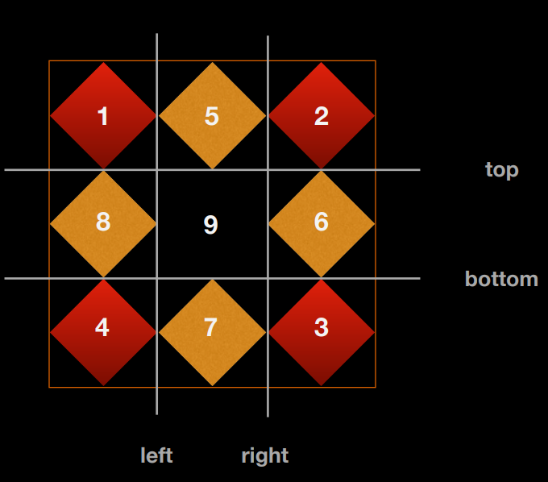

<!DOCTYPE html>
<html lang="en">

<head>
  <meta charset="utf-8" />
    
  <meta name="viewport" content="width=device-width, initial-scale=1, maximum-scale=1" />
  <title>
    CSS3 --- 应用篇 |  “鼠”于Huafu的“2”！
  </title>
  
  <link rel="shortcut icon" href="http://localhost:4000/blog/favicon.ico" />
  
  <link rel="stylesheet" href="/blog/css/style.css">
  <script src="/blog/js/pace.min.js"></script>

  

  

<link rel="alternate" href="/blog/atom.xml" title="“鼠”于Huafu的“2”！" type="application/atom+xml">
</head>

</html>

<body>
  <div id="app">
    <main class="content">
      <section class="outer">
  <article id="post-CSS3a" class="article article-type-post" itemscope
  itemprop="blogPost" data-scroll-reveal>

  <div class="article-inner">
    
    <header class="article-header">
       
<h1 class="article-title sea-center" style="border-left:0" itemprop="name">
  CSS3 --- 应用篇
</h1>
  

    </header>
    

    
    <div class="article-meta">
      <a href="/blog/2020/01/02/CSS3a/" class="article-date">
  <time datetime="2020-01-01T19:00:00.000Z" itemprop="datePublished">2020-01-02</time>
</a>
      
    </div>
    

    
    
    <div class="tocbot"></div>


    

    <div class="article-entry" itemprop="articleBody">
      
  <div class="justified-gallery" id="gallery">
  
      <div>
        <a class="fancybox" data-fancybox="images" data-caption="img_caption" href="/blog/img_url" rel="gallery_ck73cha1x0002w8tg2npzfuga" title="img_caption">
          
        </a>
      </div>
  
      <div>
        <a class="fancybox" data-fancybox="images" data-caption="img_caption" href="/blog/img_url" rel="gallery_ck73cha1x0002w8tg2npzfuga" title="img_caption">
          
        </a>
      </div>
  
  </div>


      

      
      <h1 id="一、css3’s-compatible-history"><a href="#一、css3’s-compatible-history" class="headerlink" title="一、css3’s compatible history"></a>一、css3’s compatible history</h1><h2 id="（一）前缀与浏览器"><a href="#（一）前缀与浏览器" class="headerlink" title="（一）前缀与浏览器"></a>（一）前缀与浏览器</h2><h3 id="1-前缀与内核"><a href="#1-前缀与内核" class="headerlink" title="1.前缀与内核"></a>1.前缀与内核</h3><table>
<thead>
<tr>
<th align="center">prefix</th>
<th align="center">browser</th>
</tr>
</thead>
<tbody><tr>
<td align="center">-webkit-</td>
<td align="center">chrome/safari</td>
</tr>
<tr>
<td align="center">-moz-</td>
<td align="center">firefox</td>
</tr>
<tr>
<td align="center">-ms-</td>
<td align="center">IE</td>
</tr>
<tr>
<td align="center">-o-</td>
<td align="center">opera</td>
</tr>
</tbody></table>
<h3 id="2-兼容性处理"><a href="#2-兼容性处理" class="headerlink" title="2.兼容性处理"></a>2.兼容性处理</h3><ul>
<li>手册：<a href="http://css.doyoe.com" target="_blank" rel="noopener">http://css.doyoe.com</a></li>
<li>权威：<a href="http://www.caniuse.com" target="_blank" rel="noopener">http://www.caniuse.com</a></li>
<li>插件：autoprefixer 插件自动添加前缀</li>
</ul>
<h2 id="（二）预处理器与后处理器"><a href="#（二）预处理器与后处理器" class="headerlink" title="（二）预处理器与后处理器"></a>（二）预处理器与后处理器</h2><h3 id="1-pre-processor"><a href="#1-pre-processor" class="headerlink" title="1.pre-processor"></a>1.pre-processor</h3><ul>
<li>less</li>
<li>sass</li>
<li>cssNext</li>
</ul>
<h3 id="2-post-processor"><a href="#2-post-processor" class="headerlink" title="2.post-processor"></a>2.post-processor</h3><ul>
<li>autoprefixer</li>
</ul>
<h3 id="3-postCss"><a href="#3-postCss" class="headerlink" title="3.postCss"></a>3.postCss</h3><ul>
<li>用 js 实现的 css 抽象语法树 AST（Abstract Syntax Tree）</li>
<li>剩下的事留给插件去做</li>
</ul>
<hr>
<h1 id="二、selectors-of-css3"><a href="#二、selectors-of-css3" class="headerlink" title="二、selectors of css3"></a>二、selectors of css3</h1><h2 id="（一）relationship-selector"><a href="#（一）relationship-selector" class="headerlink" title="（一）relationship selector"></a>（一）relationship selector</h2><table>
<thead>
<tr>
<th align="left">selector</th>
<th align="left">mean</th>
</tr>
</thead>
<tbody><tr>
<td align="left">E F</td>
<td align="left">后代所有满足条件的子元素</td>
</tr>
<tr>
<td align="left">E &gt; F</td>
<td align="left">直接子元素</td>
</tr>
<tr>
<td align="left">E + F</td>
<td align="left">下一个满足条件的兄弟元素</td>
</tr>
<tr>
<td align="left">E ~ F</td>
<td align="left">之后所有满足条件的兄弟元素</td>
</tr>
</tbody></table>
<h2 id="（二）attribute-selector"><a href="#（二）attribute-selector" class="headerlink" title="（二）attribute selector"></a>（二）attribute selector</h2><table>
<thead>
<tr>
<th align="left">selector</th>
<th align="left">mean</th>
</tr>
</thead>
<tbody><tr>
<td align="left">E[attr ~= “a”]</td>
<td align="left">属性值中有单独 a 的元素</td>
</tr>
<tr>
<td align="left">E[attr |= “a”]</td>
<td align="left">属性值中以 a 或 a- 开头的元素</td>
</tr>
<tr>
<td align="left">E[attr ^= “a”]</td>
<td align="left">属性值中以 a 开头的元素</td>
</tr>
<tr>
<td align="left">E[attr $= “a”]</td>
<td align="left">属性值中以 a 结尾的元素</td>
</tr>
<tr>
<td align="left">E[attr *= “a”]</td>
<td align="left">属性值中包含 a 的元素</td>
</tr>
</tbody></table>
<h2 id="（三）pseudo-element-selector"><a href="#（三）pseudo-element-selector" class="headerlink" title="（三）pseudo-element selector"></a>（三）pseudo-element selector</h2><table>
<thead>
<tr>
<th align="left">selector</th>
<th align="left">mean</th>
</tr>
</thead>
<tbody><tr>
<td align="left">E::placeholder</td>
<td align="left">输入框提示文字，仅仅可以设置 color</td>
</tr>
<tr>
<td align="left">E::selection]</td>
<td align="left">文本选中效果，仅仅可以设置 color、background-color、text-shadow</td>
</tr>
</tbody></table>
<h2 id="（四）pseudo-classes-selector"><a href="#（四）pseudo-classes-selector" class="headerlink" title="（四）pseudo-classes selector"></a>（四）pseudo-classes selector</h2><ul>
<li><p>被选中元素的一种状态</p>
<table>
<thead>
<tr>
<th align="left">selector</th>
<th align="left">mean</th>
</tr>
</thead>
<tbody><tr>
<td align="left">:root</td>
<td align="left">根节点</td>
</tr>
<tr>
<td align="left">E:not(selector)</td>
<td align="left">排除</td>
</tr>
<tr>
<td align="left">E:target</td>
<td align="left">锚点选中</td>
</tr>
<tr>
<td align="left">E:first-child</td>
<td align="left">第一个子元素</td>
</tr>
<tr>
<td align="left">E:last-child</td>
<td align="left">最后一个子元素</td>
</tr>
<tr>
<td align="left">E:only-child</td>
<td align="left">仅仅一个子元素</td>
</tr>
<tr>
<td align="left">E:nth-child(n)</td>
<td align="left">顺序第 n 个子元素</td>
</tr>
<tr>
<td align="left">E:nth-last-child(n)</td>
<td align="left">逆序第 n 个子元素</td>
</tr>
<tr>
<td align="left">E:nth-child(odd)</td>
<td align="left">奇数个子元素</td>
</tr>
<tr>
<td align="left">E:nth-child(even)</td>
<td align="left">偶数个子元素</td>
</tr>
<tr>
<td align="left">E:first-of-type</td>
<td align="left">同类型第一个子元素</td>
</tr>
<tr>
<td align="left">E:last-of-type</td>
<td align="left">同类型最后一个子元素</td>
</tr>
<tr>
<td align="left">E:only-of-type</td>
<td align="left">同类型仅仅一个子元素</td>
</tr>
<tr>
<td align="left">E:nth-of-type(n)</td>
<td align="left">顺序同类型第 n 个子元素</td>
</tr>
<tr>
<td align="left">E:nth-last-of-type(n)</td>
<td align="left">逆序同类型第 n 个子元素</td>
</tr>
<tr>
<td align="left">E:empty</td>
<td align="left">内容为空的元素</td>
</tr>
<tr>
<td align="left">E:checked</td>
<td align="left">被选中表单元素</td>
</tr>
<tr>
<td align="left">E:enabled</td>
<td align="left">可用表单元素</td>
</tr>
<tr>
<td align="left">E:disabled</td>
<td align="left">被禁用表单元素</td>
</tr>
<tr>
<td align="left">E:read-only</td>
<td align="left">仅仅可读表单元素</td>
</tr>
<tr>
<td align="left">E:read-write</td>
<td align="left">可读可写用表单元素</td>
</tr>
</tbody></table>
</li>
</ul>
<hr>
<h1 id="三、border-of-css3"><a href="#三、border-of-css3" class="headerlink" title="三、border of css3"></a>三、border of css3</h1><h2 id="（一）border-radius"><a href="#（一）border-radius" class="headerlink" title="（一）border-radius"></a>（一）border-radius</h2><figure class="highlight css"><table><tr><td class="gutter"><pre><span class="line">1</span></pre></td><td class="code"><pre><span class="line"><span class="selector-tag">div</span> &#123;</span></pre></td></tr><tr><td class="gutter"><pre><span class="line">2</span></pre></td><td class="code"><pre><span class="line">  <span class="attribute">border-top-left-radius</span>: <span class="number">10px</span> <span class="number">10px</span>;</span></pre></td></tr><tr><td class="gutter"><pre><span class="line">3</span></pre></td><td class="code"><pre><span class="line">  <span class="attribute">border-top-right-radius</span>: <span class="number">10px</span> <span class="number">10px</span>;</span></pre></td></tr><tr><td class="gutter"><pre><span class="line">4</span></pre></td><td class="code"><pre><span class="line">  <span class="attribute">border-bottom-right-radius</span>: <span class="number">10px</span> <span class="number">10px</span>;</span></pre></td></tr><tr><td class="gutter"><pre><span class="line">5</span></pre></td><td class="code"><pre><span class="line">  <span class="attribute">border-bottom-left-radius</span>: <span class="number">10px</span> <span class="number">10px</span>;</span></pre></td></tr><tr><td class="gutter"><pre><span class="line">6</span></pre></td><td class="code"><pre><span class="line"></span></pre></td></tr><tr><td class="gutter"><pre><span class="line">7</span></pre></td><td class="code"><pre><span class="line">  <span class="attribute">border-radius</span>: <span class="number">10px</span> <span class="number">20px</span> <span class="number">30px</span> <span class="number">40px</span> / <span class="number">10px</span> <span class="number">20px</span> <span class="number">30px</span> <span class="number">40px</span>;</span></pre></td></tr><tr><td class="gutter"><pre><span class="line">8</span></pre></td><td class="code"><pre><span class="line">&#125;</span></pre></td></tr></table></figure>

<p></p>
<h2 id="（二）border-image"><a href="#（二）border-image" class="headerlink" title="（二）border-image"></a>（二）border-image</h2><figure class="highlight css"><table><tr><td class="gutter"><pre><span class="line">1</span></pre></td><td class="code"><pre><span class="line"><span class="selector-tag">div</span> &#123;</span></pre></td></tr><tr><td class="gutter"><pre><span class="line">2</span></pre></td><td class="code"><pre><span class="line">  <span class="attribute">border-width</span>: <span class="number">10px</span>;</span></pre></td></tr><tr><td class="gutter"><pre><span class="line">3</span></pre></td><td class="code"><pre><span class="line">  <span class="attribute">border-style</span>: solid;</span></pre></td></tr><tr><td class="gutter"><pre><span class="line">4</span></pre></td><td class="code"><pre><span class="line">  <span class="attribute">border-color</span>: red;</span></pre></td></tr><tr><td class="gutter"><pre><span class="line">5</span></pre></td><td class="code"><pre><span class="line">  <span class="attribute">border-image-source</span>: <span class="built_in">url</span>(); <span class="comment">/*linear-gradient redial-gradient*/</span></span></pre></td></tr><tr><td class="gutter"><pre><span class="line">6</span></pre></td><td class="code"><pre><span class="line">  <span class="attribute">border-image-slice</span>: <span class="number">10</span> <span class="number">10</span> <span class="number">10</span> <span class="number">10</span>;</span></pre></td></tr><tr><td class="gutter"><pre><span class="line">7</span></pre></td><td class="code"><pre><span class="line">  <span class="attribute">border-image-repeat</span>: stretch; <span class="comment">/*repeat round space*/</span></span></pre></td></tr><tr><td class="gutter"><pre><span class="line">8</span></pre></td><td class="code"><pre><span class="line">  <span class="attribute">border-image-width</span>: <span class="number">1</span>; <span class="comment">/*倍数，若默认auto则取slice值加上px*/</span></span></pre></td></tr><tr><td class="gutter"><pre><span class="line">9</span></pre></td><td class="code"><pre><span class="line">  <span class="attribute">border-image-outset</span>: <span class="number">0px</span>; <span class="comment">/*向外偏移*/</span></span></pre></td></tr><tr><td class="gutter"><pre><span class="line">10</span></pre></td><td class="code"><pre><span class="line">&#125;</span></pre></td></tr></table></figure>

<ul>
<li>border-image-repeat 重复<ul>
<li>stretch 默认拉伸</li>
<li>repeat 对称重复填充</li>
<li>round 适当缩放填充</li>
<li>space 空白填充</li>
</ul>
</li>
</ul>
<p></p>
<h2 id="（三）box-shadow"><a href="#（三）box-shadow" class="headerlink" title="（三）box-shadow"></a>（三）box-shadow</h2><figure class="highlight css"><table><tr><td class="gutter"><pre><span class="line">1</span></pre></td><td class="code"><pre><span class="line"><span class="selector-tag">div</span> &#123;</span></pre></td></tr><tr><td class="gutter"><pre><span class="line">2</span></pre></td><td class="code"><pre><span class="line">  <span class="attribute">box-shadow</span>: <span class="number">10px</span> <span class="number">10px</span> <span class="number">10px</span> <span class="number">10px</span> red, <span class="number">10px</span> <span class="number">10px</span> <span class="number">10px</span> <span class="number">10px</span> green,</span></pre></td></tr><tr><td class="gutter"><pre><span class="line">3</span></pre></td><td class="code"><pre><span class="line">              <span class="number">10px</span> <span class="number">10px</span> <span class="number">10px</span> <span class="number">10px</span> blue, <span class="number">10px</span> <span class="number">10px</span> <span class="number">10px</span> <span class="number">10px</span> pink;</span></pre></td></tr><tr><td class="gutter"><pre><span class="line">4</span></pre></td><td class="code"><pre><span class="line"></span></pre></td></tr><tr><td class="gutter"><pre><span class="line">5</span></pre></td><td class="code"><pre><span class="line">  <span class="attribute">box-shadow</span>: inset <span class="number">10px</span> <span class="number">10px</span> <span class="number">10px</span> <span class="number">10px</span> red;</span></pre></td></tr><tr><td class="gutter"><pre><span class="line">6</span></pre></td><td class="code"><pre><span class="line">&#125;</span></pre></td></tr></table></figure>

<ul>
<li>内阴影</li>
<li>水平偏移（正右负左）</li>
<li>垂直偏移（正下负上）</li>
<li>模糊半径</li>
<li>缩放（四个方向同时增减设置值）</li>
<li>颜色<br></li>
<li>文字在阴影之上，背景在阴影之下</li>
</ul>
<h1 id="四、background-of-css3"><a href="#四、background-of-css3" class="headerlink" title="四、background of css3"></a>四、background of css3</h1><h2 id="（一）background-color"><a href="#（一）background-color" class="headerlink" title="（一）background-color"></a>（一）background-color</h2><figure class="highlight css"><table><tr><td class="gutter"><pre><span class="line">1</span></pre></td><td class="code"><pre><span class="line"><span class="selector-tag">div</span> &#123;</span></pre></td></tr><tr><td class="gutter"><pre><span class="line">2</span></pre></td><td class="code"><pre><span class="line">  <span class="attribute">background-color</span>: black;</span></pre></td></tr><tr><td class="gutter"><pre><span class="line">3</span></pre></td><td class="code"><pre><span class="line">  <span class="attribute">background-color</span>: <span class="number">#000</span>;</span></pre></td></tr><tr><td class="gutter"><pre><span class="line">4</span></pre></td><td class="code"><pre><span class="line">  <span class="attribute">background-color</span>: <span class="built_in">rgb</span>(0, 0, 0);</span></pre></td></tr><tr><td class="gutter"><pre><span class="line">5</span></pre></td><td class="code"><pre><span class="line">  <span class="attribute">background-color</span>: <span class="built_in">rgba</span>(0, 0, 0, 1);</span></pre></td></tr><tr><td class="gutter"><pre><span class="line">6</span></pre></td><td class="code"><pre><span class="line">&#125;</span></pre></td></tr></table></figure>

<h2 id="（二）background-image"><a href="#（二）background-image" class="headerlink" title="（二）background-image"></a>（二）background-image</h2><figure class="highlight css"><table><tr><td class="gutter"><pre><span class="line">1</span></pre></td><td class="code"><pre><span class="line"><span class="selector-tag">div</span> &#123;</span></pre></td></tr><tr><td class="gutter"><pre><span class="line">2</span></pre></td><td class="code"><pre><span class="line">  <span class="attribute">background-color</span>: <span class="built_in">url</span>(), <span class="built_in">url</span>(); <span class="comment">/*多张图片*/</span></span></pre></td></tr><tr><td class="gutter"><pre><span class="line">3</span></pre></td><td class="code"><pre><span class="line">  <span class="attribute">background-color</span>: <span class="built_in">linear-gradient</span>(); <span class="comment">/*线性渐变*/</span></span></pre></td></tr><tr><td class="gutter"><pre><span class="line">4</span></pre></td><td class="code"><pre><span class="line">  <span class="attribute">background-color</span>: <span class="built_in">radial-gradient</span>(); <span class="comment">/*径向渐变*/</span></span></pre></td></tr><tr><td class="gutter"><pre><span class="line">5</span></pre></td><td class="code"><pre><span class="line">&#125;</span></pre></td></tr></table></figure>

<h2 id="（三）background-repeat"><a href="#（三）background-repeat" class="headerlink" title="（三）background-repeat"></a>（三）background-repeat</h2><figure class="highlight css"><table><tr><td class="gutter"><pre><span class="line">1</span></pre></td><td class="code"><pre><span class="line"><span class="selector-tag">div</span> &#123;</span></pre></td></tr><tr><td class="gutter"><pre><span class="line">2</span></pre></td><td class="code"><pre><span class="line">  <span class="attribute">background-repeat</span>: repeat; <span class="comment">/*默认水平、垂直重复平铺*/</span></span></pre></td></tr><tr><td class="gutter"><pre><span class="line">3</span></pre></td><td class="code"><pre><span class="line">  <span class="attribute">background-repeat</span>: repeat-x; <span class="comment">/*水平重复，垂直不重复*/</span></span></pre></td></tr><tr><td class="gutter"><pre><span class="line">4</span></pre></td><td class="code"><pre><span class="line">  <span class="attribute">background-repeat</span>: repeat-y; <span class="comment">/*水平不重复，垂直重复*/</span></span></pre></td></tr><tr><td class="gutter"><pre><span class="line">5</span></pre></td><td class="code"><pre><span class="line">  <span class="attribute">background-repeat</span>: no-repeat; <span class="comment">/*水平、垂直不重复平铺*/</span></span></pre></td></tr><tr><td class="gutter"><pre><span class="line">6</span></pre></td><td class="code"><pre><span class="line">  <span class="attribute">background-repeat</span>: round space; <span class="comment">/*水平适当缩放填充、垂直空白填充*/</span></span></pre></td></tr><tr><td class="gutter"><pre><span class="line">7</span></pre></td><td class="code"><pre><span class="line">&#125;</span></pre></td></tr></table></figure>

<h2 id="（四）background-origin"><a href="#（四）background-origin" class="headerlink" title="（四）background-origin"></a>（四）background-origin</h2><figure class="highlight css"><table><tr><td class="gutter"><pre><span class="line">1</span></pre></td><td class="code"><pre><span class="line"><span class="selector-tag">div</span> &#123;</span></pre></td></tr><tr><td class="gutter"><pre><span class="line">2</span></pre></td><td class="code"><pre><span class="line">  <span class="attribute">background-origin</span>: padding-box; <span class="comment">/*默认从填充盒开始*/</span></span></pre></td></tr><tr><td class="gutter"><pre><span class="line">3</span></pre></td><td class="code"><pre><span class="line">  <span class="attribute">background-origin</span>: border-box; <span class="comment">/*从边框盒开始*/</span></span></pre></td></tr><tr><td class="gutter"><pre><span class="line">4</span></pre></td><td class="code"><pre><span class="line">  <span class="attribute">background-origin</span>: content-box; <span class="comment">/*从内容盒开始*/</span></span></pre></td></tr><tr><td class="gutter"><pre><span class="line">5</span></pre></td><td class="code"><pre><span class="line">&#125;</span></pre></td></tr></table></figure>

<h2 id="（五）background-clip"><a href="#（五）background-clip" class="headerlink" title="（五）background-clip"></a>（五）background-clip</h2><figure class="highlight css"><table><tr><td class="gutter"><pre><span class="line">1</span></pre></td><td class="code"><pre><span class="line"><span class="selector-tag">div</span> &#123;</span></pre></td></tr><tr><td class="gutter"><pre><span class="line">2</span></pre></td><td class="code"><pre><span class="line">  <span class="attribute">background-clip</span>: border-box; <span class="comment">/*默认到边框盒结束*/</span></span></pre></td></tr><tr><td class="gutter"><pre><span class="line">3</span></pre></td><td class="code"><pre><span class="line">  <span class="attribute">background-clip</span>: padding-box; <span class="comment">/*到填充盒结束*/</span></span></pre></td></tr><tr><td class="gutter"><pre><span class="line">4</span></pre></td><td class="code"><pre><span class="line">  <span class="attribute">background-clip</span>: content-box; <span class="comment">/*到内容盒结束*/</span></span></pre></td></tr><tr><td class="gutter"><pre><span class="line">5</span></pre></td><td class="code"><pre><span class="line">  <span class="attribute">background-clip</span>: text; <span class="comment">/*反向剪切非文字区域*/</span></span></pre></td></tr><tr><td class="gutter"><pre><span class="line">6</span></pre></td><td class="code"><pre><span class="line">  <span class="attribute">-webkit-text-fill-color</span>: transparent;</span></pre></td></tr><tr><td class="gutter"><pre><span class="line">7</span></pre></td><td class="code"><pre><span class="line">&#125;</span></pre></td></tr></table></figure>

<h2 id="（六）background-position"><a href="#（六）background-position" class="headerlink" title="（六）background-position"></a>（六）background-position</h2><figure class="highlight css"><table><tr><td class="gutter"><pre><span class="line">1</span></pre></td><td class="code"><pre><span class="line"><span class="selector-tag">div</span> &#123;</span></pre></td></tr><tr><td class="gutter"><pre><span class="line">2</span></pre></td><td class="code"><pre><span class="line">  <span class="attribute">background-position</span>: center; <span class="comment">/*默认水平、垂直居中*/</span></span></pre></td></tr><tr><td class="gutter"><pre><span class="line">3</span></pre></td><td class="code"><pre><span class="line">  <span class="attribute">background-position</span>: top left; <span class="comment">/*靠上靠左*/</span></span></pre></td></tr><tr><td class="gutter"><pre><span class="line">4</span></pre></td><td class="code"><pre><span class="line">  <span class="attribute">background-position</span>: <span class="number">100px</span>; <span class="comment">/*水平相对于origin偏移100px, 垂直居中*/</span></span></pre></td></tr><tr><td class="gutter"><pre><span class="line">5</span></pre></td><td class="code"><pre><span class="line">  <span class="attribute">background-position</span>: <span class="number">50%</span> <span class="number">50%</span>; <span class="comment">/*水平相对于origin偏移50%, 垂直偏移50%*/</span></span></pre></td></tr><tr><td class="gutter"><pre><span class="line">6</span></pre></td><td class="code"><pre><span class="line">&#125;</span></pre></td></tr></table></figure>

<h2 id="（七）background-size"><a href="#（七）background-size" class="headerlink" title="（七）background-size"></a>（七）background-size</h2><figure class="highlight css"><table><tr><td class="gutter"><pre><span class="line">1</span></pre></td><td class="code"><pre><span class="line"><span class="selector-tag">div</span> &#123;</span></pre></td></tr><tr><td class="gutter"><pre><span class="line">2</span></pre></td><td class="code"><pre><span class="line">  <span class="attribute">background-size</span>: auto; <span class="comment">/*默认不改变图片大小和比例*/</span></span></pre></td></tr><tr><td class="gutter"><pre><span class="line">3</span></pre></td><td class="code"><pre><span class="line">  <span class="attribute">background-size</span>: cover; <span class="comment">/*按图片比例缩放，图片覆盖整个容器，图片可能会有溢出*/</span></span></pre></td></tr><tr><td class="gutter"><pre><span class="line">4</span></pre></td><td class="code"><pre><span class="line">  <span class="attribute">background-size</span>: contain; <span class="comment">/*按图片比例缩放，容器包含整个图片，容器可能会有留白*/</span></span></pre></td></tr><tr><td class="gutter"><pre><span class="line">5</span></pre></td><td class="code"><pre><span class="line">  <span class="attribute">background-size</span>: <span class="number">100px</span>; <span class="comment">/*宽度100px, 高度按比例自动缩放*/</span></span></pre></td></tr><tr><td class="gutter"><pre><span class="line">6</span></pre></td><td class="code"><pre><span class="line">  <span class="attribute">background-size</span>: <span class="number">100px</span> <span class="number">200px</span>; <span class="comment">/*宽度100px, 高度200px, 图片可能会变形*/</span></span></pre></td></tr><tr><td class="gutter"><pre><span class="line">7</span></pre></td><td class="code"><pre><span class="line">  <span class="attribute">background-size</span>: <span class="number">50%</span> <span class="number">50%</span>; <span class="comment">/*宽高缩小至原始大小的一半*/</span></span></pre></td></tr><tr><td class="gutter"><pre><span class="line">8</span></pre></td><td class="code"><pre><span class="line">&#125;</span></pre></td></tr></table></figure>

<h2 id="（八）background-attachment"><a href="#（八）background-attachment" class="headerlink" title="（八）background-attachment"></a>（八）background-attachment</h2><figure class="highlight css"><table><tr><td class="gutter"><pre><span class="line">1</span></pre></td><td class="code"><pre><span class="line"><span class="selector-tag">div</span> &#123;</span></pre></td></tr><tr><td class="gutter"><pre><span class="line">2</span></pre></td><td class="code"><pre><span class="line">  <span class="attribute">background-attachment</span>: scroll; <span class="comment">/*默认相对于容器固定*/</span></span></pre></td></tr><tr><td class="gutter"><pre><span class="line">3</span></pre></td><td class="code"><pre><span class="line">  <span class="attribute">background-attachment</span>: local; <span class="comment">/*相对于内容固定*/</span></span></pre></td></tr><tr><td class="gutter"><pre><span class="line">4</span></pre></td><td class="code"><pre><span class="line">  <span class="attribute">background-attachment</span>: fixed; <span class="comment">/*相对于视口固定*/</span></span></pre></td></tr><tr><td class="gutter"><pre><span class="line">5</span></pre></td><td class="code"><pre><span class="line">&#125;</span></pre></td></tr></table></figure>

<h2 id="（九）渐变生成器"><a href="#（九）渐变生成器" class="headerlink" title="（九）渐变生成器"></a>（九）渐变生成器</h2><h3 id="1-linear-gradient"><a href="#1-linear-gradient" class="headerlink" title="1.linear-gradient()"></a>1.linear-gradient()</h3><figure class="highlight css"><table><tr><td class="gutter"><pre><span class="line">1</span></pre></td><td class="code"><pre><span class="line"><span class="selector-tag">div</span> &#123;</span></pre></td></tr><tr><td class="gutter"><pre><span class="line">2</span></pre></td><td class="code"><pre><span class="line">  <span class="attribute">background-image</span>: <span class="built_in">linear-gradient</span>(red, orange); <span class="comment">/*默认重上到下渐变*/</span></span></pre></td></tr><tr><td class="gutter"><pre><span class="line">3</span></pre></td><td class="code"><pre><span class="line">  <span class="attribute">background-image</span>: <span class="built_in">linear-gradient</span>(red, 50%, orange); <span class="comment">/*改变中心点*/</span></span></pre></td></tr><tr><td class="gutter"><pre><span class="line">4</span></pre></td><td class="code"><pre><span class="line">  <span class="attribute">background-image</span>: <span class="built_in">linear-gradient</span>(to bottom, red, orange); <span class="comment">/*设置方向*/</span></span></pre></td></tr><tr><td class="gutter"><pre><span class="line">5</span></pre></td><td class="code"><pre><span class="line">  <span class="attribute">background-image</span>: <span class="built_in">linear-gradient</span>(to bottom right, red, orange); <span class="comment">/*对角渐变*/</span></span></pre></td></tr><tr><td class="gutter"><pre><span class="line">6</span></pre></td><td class="code"><pre><span class="line">  <span class="attribute">background-image</span>: <span class="built_in">linear-gradient</span>(180deg, red, orange); <span class="comment">/*设置角度*/</span></span></pre></td></tr><tr><td class="gutter"><pre><span class="line">7</span></pre></td><td class="code"><pre><span class="line">  <span class="attribute">background-image</span>: <span class="built_in">linear-gradient</span>(180deg, red 20%, orange 100%); <span class="comment">/*设置每种颜色渐变起点*/</span></span></pre></td></tr><tr><td class="gutter"><pre><span class="line">8</span></pre></td><td class="code"><pre><span class="line">&#125;</span></pre></td></tr></table></figure>

<p></p>
<h3 id="2-radial-gradient"><a href="#2-radial-gradient" class="headerlink" title="2.radial-gradient()"></a>2.radial-gradient()</h3><figure class="highlight css"><table><tr><td class="gutter"><pre><span class="line">1</span></pre></td><td class="code"><pre><span class="line"><span class="selector-tag">div</span> &#123;</span></pre></td></tr><tr><td class="gutter"><pre><span class="line">2</span></pre></td><td class="code"><pre><span class="line">  <span class="attribute">background-image</span>: <span class="built_in">radial-gradient</span>(red, orange); <span class="comment">/*默认重上到下渐变*/</span></span></pre></td></tr><tr><td class="gutter"><pre><span class="line">3</span></pre></td><td class="code"><pre><span class="line">  <span class="attribute">background-image</span>: <span class="built_in">radial-gradient</span>(at 0% 0%, red, orange); <span class="comment">/*改变中心点*/</span></span></pre></td></tr><tr><td class="gutter"><pre><span class="line">4</span></pre></td><td class="code"><pre><span class="line">  <span class="attribute">background-image</span>: <span class="built_in">radial-gradient</span>(at 0% 0%, red 20%, orange 80%); <span class="comment">/*设置每种颜色渐变起点*/</span></span></pre></td></tr><tr><td class="gutter"><pre><span class="line">5</span></pre></td><td class="code"><pre><span class="line">  <span class="attribute">background-image</span>: <span class="built_in">radial-gradient</span>(circle at 0% 0%, red 20%, orange 80%); <span class="comment">/*圆形放射*/</span></span></pre></td></tr><tr><td class="gutter"><pre><span class="line">6</span></pre></td><td class="code"><pre><span class="line">  <span class="attribute">background-image</span>: <span class="built_in">radial-gradient</span>(ellipse at 0% 0%, red 20%, orange 80%); <span class="comment">/*椭圆放射*/</span></span></pre></td></tr><tr><td class="gutter"><pre><span class="line">7</span></pre></td><td class="code"><pre><span class="line">  <span class="attribute">background-image</span>: <span class="built_in">radial-gradient</span>(ellipse closest-side at 0% 0%, red 20%, orange 80%); <span class="comment">/*放射至最近的边结束*/</span></span></pre></td></tr><tr><td class="gutter"><pre><span class="line">8</span></pre></td><td class="code"><pre><span class="line">  <span class="attribute">background-image</span>: <span class="built_in">radial-gradient</span>(ellipse closest-corner at 0% 0%, red 20%, orange 80%); <span class="comment">/*放射至最近的角结束*/</span></span></pre></td></tr><tr><td class="gutter"><pre><span class="line">9</span></pre></td><td class="code"><pre><span class="line">  <span class="attribute">background-image</span>: <span class="built_in">radial-gradient</span>(ellipse farthest-side at 0% 0%, red 20%, orange 80%); <span class="comment">/*放射至最远的边结束*/</span></span></pre></td></tr><tr><td class="gutter"><pre><span class="line">10</span></pre></td><td class="code"><pre><span class="line">  <span class="attribute">background-image</span>: <span class="built_in">radial-gradient</span>(ellipse farthest-corner at 0% 0%, red 20%, orange 80%); <span class="comment">/*放射至最远的角结束*/</span></span></pre></td></tr><tr><td class="gutter"><pre><span class="line">11</span></pre></td><td class="code"><pre><span class="line">&#125;</span></pre></td></tr></table></figure>

<h3 id="3-repeating-linear-gradient"><a href="#3-repeating-linear-gradient" class="headerlink" title="3.repeating-linear-gradient()"></a>3.repeating-linear-gradient()</h3><h3 id="4-repeating-radial-gradient"><a href="#4-repeating-radial-gradient" class="headerlink" title="4.repeating-radial-gradient()"></a>4.repeating-radial-gradient()</h3><hr>
<h1 id="五、text"><a href="#五、text" class="headerlink" title="五、text"></a>五、text</h1><h2 id="（一）text-shadow"><a href="#（一）text-shadow" class="headerlink" title="（一）text-shadow"></a>（一）text-shadow</h2><figure class="highlight css"><table><tr><td class="gutter"><pre><span class="line">1</span></pre></td><td class="code"><pre><span class="line"><span class="selector-tag">div</span> &#123;</span></pre></td></tr><tr><td class="gutter"><pre><span class="line">2</span></pre></td><td class="code"><pre><span class="line">  <span class="attribute">text-shadow</span>: <span class="number">0px</span> <span class="number">0px</span> <span class="number">10px</span> red;</span></pre></td></tr><tr><td class="gutter"><pre><span class="line">3</span></pre></td><td class="code"><pre><span class="line">&#125;</span></pre></td></tr></table></figure>

<ul>
<li>水平偏移量</li>
<li>垂直偏移量</li>
<li>模糊半径</li>
<li>颜色</li>
</ul>
<h2 id="（二）text-stroke"><a href="#（二）text-stroke" class="headerlink" title="（二）text-stroke"></a>（二）text-stroke</h2><figure class="highlight css"><table><tr><td class="gutter"><pre><span class="line">1</span></pre></td><td class="code"><pre><span class="line"><span class="selector-tag">div</span> &#123;</span></pre></td></tr><tr><td class="gutter"><pre><span class="line">2</span></pre></td><td class="code"><pre><span class="line">  <span class="attribute">-webkit-text-stroke</span>: <span class="number">0px</span> red;</span></pre></td></tr><tr><td class="gutter"><pre><span class="line">3</span></pre></td><td class="code"><pre><span class="line">&#125;</span></pre></td></tr></table></figure>

<ul>
<li>描边宽度</li>
<li>描边颜色</li>
</ul>
<h2 id="（三）-font-face"><a href="#（三）-font-face" class="headerlink" title="（三）@font-face"></a>（三）@font-face</h2><figure class="highlight css"><table><tr><td class="gutter"><pre><span class="line">1</span></pre></td><td class="code"><pre><span class="line">@<span class="keyword">font-face</span> &#123;</span></pre></td></tr><tr><td class="gutter"><pre><span class="line">2</span></pre></td><td class="code"><pre><span class="line">  <span class="attribute">font-family</span>: <span class="string">"fontName"</span>;</span></pre></td></tr><tr><td class="gutter"><pre><span class="line">3</span></pre></td><td class="code"><pre><span class="line">  <span class="attribute">src</span>: <span class="built_in">url</span>();</span></pre></td></tr><tr><td class="gutter"><pre><span class="line">4</span></pre></td><td class="code"><pre><span class="line">  <span class="attribute">src</span>: <span class="built_in">url</span>() <span class="built_in">format</span>();</span></pre></td></tr><tr><td class="gutter"><pre><span class="line">5</span></pre></td><td class="code"><pre><span class="line">&#125;</span></pre></td></tr><tr><td class="gutter"><pre><span class="line">6</span></pre></td><td class="code"><pre><span class="line"><span class="selector-tag">div</span> &#123;</span></pre></td></tr><tr><td class="gutter"><pre><span class="line">7</span></pre></td><td class="code"><pre><span class="line">  <span class="attribute">font-family</span>: <span class="string">"fontName"</span>;</span></pre></td></tr><tr><td class="gutter"><pre><span class="line">8</span></pre></td><td class="code"><pre><span class="line">&#125;</span></pre></td></tr></table></figure>

<h2 id="（四）column"><a href="#（四）column" class="headerlink" title="（四）column"></a>（四）column</h2><figure class="highlight css"><table><tr><td class="gutter"><pre><span class="line">1</span></pre></td><td class="code"><pre><span class="line"><span class="selector-tag">div</span> &#123;</span></pre></td></tr><tr><td class="gutter"><pre><span class="line">2</span></pre></td><td class="code"><pre><span class="line">  <span class="attribute">column-width</span>: <span class="number">100px</span>;</span></pre></td></tr><tr><td class="gutter"><pre><span class="line">3</span></pre></td><td class="code"><pre><span class="line">  <span class="attribute">column-count</span>: <span class="number">4</span>;</span></pre></td></tr><tr><td class="gutter"><pre><span class="line">4</span></pre></td><td class="code"><pre><span class="line">  <span class="attribute">column-gap</span>: <span class="number">20px</span>;</span></pre></td></tr><tr><td class="gutter"><pre><span class="line">5</span></pre></td><td class="code"><pre><span class="line">  <span class="attribute">column-rule</span>: <span class="number">1px</span> solid <span class="number">#000</span>;</span></pre></td></tr><tr><td class="gutter"><pre><span class="line">6</span></pre></td><td class="code"><pre><span class="line">  <span class="attribute">column-span</span>: all;</span></pre></td></tr><tr><td class="gutter"><pre><span class="line">7</span></pre></td><td class="code"><pre><span class="line">  <span class="attribute">column-fill</span>: balance;</span></pre></td></tr><tr><td class="gutter"><pre><span class="line">8</span></pre></td><td class="code"><pre><span class="line">&#125;</span></pre></td></tr></table></figure>

<ul>
<li>最小宽度</li>
<li>最大列数</li>
<li>间隙</li>
<li>分割线</li>
<li>跨列</li>
<li>列高</li>
</ul>
<hr>
<h1 id="六、box"><a href="#六、box" class="headerlink" title="六、box"></a>六、box</h1><h2 id="（一）混杂模式-box"><a href="#（一）混杂模式-box" class="headerlink" title="（一）混杂模式 box"></a>（一）混杂模式 box</h2><figure class="highlight css"><table><tr><td class="gutter"><pre><span class="line">1</span></pre></td><td class="code"><pre><span class="line"><span class="selector-tag">div</span> &#123;</span></pre></td></tr><tr><td class="gutter"><pre><span class="line">2</span></pre></td><td class="code"><pre><span class="line">  <span class="attribute">box-sizing</span>: content-box;</span></pre></td></tr><tr><td class="gutter"><pre><span class="line">3</span></pre></td><td class="code"><pre><span class="line">  <span class="attribute">box-sizing</span>: border-box;</span></pre></td></tr><tr><td class="gutter"><pre><span class="line">4</span></pre></td><td class="code"><pre><span class="line">&#125;</span></pre></td></tr></table></figure>

<ul>
<li><p>W3C standards mode:</p>
<ul>
<li>boxWidth = width + padding(2) + border(2)</li>
<li>boxHeight = height + padding(2) + border(2)</li>
</ul>
</li>
<li><p>IE6 quirks mode:</p>
<ul>
<li>boxWidth = width</li>
<li>boxHeight = height</li>
</ul>
</li>
</ul>
<h2 id="（二）overflow"><a href="#（二）overflow" class="headerlink" title="（二）overflow"></a>（二）overflow</h2><figure class="highlight css"><table><tr><td class="gutter"><pre><span class="line">1</span></pre></td><td class="code"><pre><span class="line"><span class="selector-tag">div</span> &#123;</span></pre></td></tr><tr><td class="gutter"><pre><span class="line">2</span></pre></td><td class="code"><pre><span class="line">  <span class="attribute">overflow</span>: visible;</span></pre></td></tr><tr><td class="gutter"><pre><span class="line">3</span></pre></td><td class="code"><pre><span class="line">  <span class="attribute">overflow</span>: hidden;</span></pre></td></tr><tr><td class="gutter"><pre><span class="line">4</span></pre></td><td class="code"><pre><span class="line">  <span class="attribute">overflow</span>: scroll;</span></pre></td></tr><tr><td class="gutter"><pre><span class="line">5</span></pre></td><td class="code"><pre><span class="line">  <span class="attribute">overflow</span>: auto;</span></pre></td></tr><tr><td class="gutter"><pre><span class="line">6</span></pre></td><td class="code"><pre><span class="line">&#125;</span></pre></td></tr></table></figure>

<ul>
<li>默认溢出显示</li>
<li>溢出隐藏</li>
<li>溢出滚动</li>
<li>溢出滚动</li>
<li>当一个方向设置非 visible 值，另一个就默认设置为 auto</li>
<li>resize 调整元素大小需要配合 overflow 属性使用才有效果</li>
</ul>
<hr>
<h2 id="（三）弹性盒子-flex"><a href="#（三）弹性盒子-flex" class="headerlink" title="（三）弹性盒子 flex"></a>（三）弹性盒子 flex</h2><h3 id="1-容器"><a href="#1-容器" class="headerlink" title="1.容器"></a>1.容器</h3><h4 id="（1）声明一个弹性容器"><a href="#（1）声明一个弹性容器" class="headerlink" title="（1）声明一个弹性容器"></a>（1）声明一个弹性容器</h4><figure class="highlight css"><table><tr><td class="gutter"><pre><span class="line">1</span></pre></td><td class="code"><pre><span class="line"><span class="selector-class">.box</span> &#123;</span></pre></td></tr><tr><td class="gutter"><pre><span class="line">2</span></pre></td><td class="code"><pre><span class="line">  <span class="comment">/*弹性容器*/</span></span></pre></td></tr><tr><td class="gutter"><pre><span class="line">3</span></pre></td><td class="code"><pre><span class="line">  <span class="attribute">display</span>: flex;</span></pre></td></tr><tr><td class="gutter"><pre><span class="line">4</span></pre></td><td class="code"><pre><span class="line">  <span class="attribute">display</span>: inline-flex;</span></pre></td></tr><tr><td class="gutter"><pre><span class="line">5</span></pre></td><td class="code"><pre><span class="line">&#125;</span></pre></td></tr></table></figure>

<h4 id="（2）主轴方向"><a href="#（2）主轴方向" class="headerlink" title="（2）主轴方向"></a>（2）主轴方向</h4><figure class="highlight css"><table><tr><td class="gutter"><pre><span class="line">1</span></pre></td><td class="code"><pre><span class="line"><span class="selector-class">.box</span> &#123;</span></pre></td></tr><tr><td class="gutter"><pre><span class="line">2</span></pre></td><td class="code"><pre><span class="line">  <span class="attribute">flex-direction</span>: row; <span class="comment">/*默认横向从左至右*/</span></span></pre></td></tr><tr><td class="gutter"><pre><span class="line">3</span></pre></td><td class="code"><pre><span class="line">  <span class="attribute">flex-direction</span>: row-reverse; <span class="comment">/*主轴横向从右至左*/</span></span></pre></td></tr><tr><td class="gutter"><pre><span class="line">4</span></pre></td><td class="code"><pre><span class="line">  <span class="attribute">flex-direction</span>: column; <span class="comment">/*主轴纵向从上至下*/</span></span></pre></td></tr><tr><td class="gutter"><pre><span class="line">5</span></pre></td><td class="code"><pre><span class="line">  <span class="attribute">flex-direction</span>: column-reverse; <span class="comment">/*主轴纵向从下至上*/</span></span></pre></td></tr><tr><td class="gutter"><pre><span class="line">6</span></pre></td><td class="code"><pre><span class="line">&#125;</span></pre></td></tr></table></figure>

<h4 id="（3）换行规则"><a href="#（3）换行规则" class="headerlink" title="（3）换行规则"></a>（3）换行规则</h4><figure class="highlight css"><table><tr><td class="gutter"><pre><span class="line">1</span></pre></td><td class="code"><pre><span class="line"><span class="selector-class">.box</span> &#123;</span></pre></td></tr><tr><td class="gutter"><pre><span class="line">2</span></pre></td><td class="code"><pre><span class="line">  <span class="attribute">flex-wrap</span>: nowrap; <span class="comment">/*默认不换行,若排列不下，则进行压缩*/</span></span></pre></td></tr><tr><td class="gutter"><pre><span class="line">3</span></pre></td><td class="code"><pre><span class="line">  <span class="attribute">flex-wrap</span>: wrap; <span class="comment">/*向下换行，不会压缩，排列不下就进行换行*/</span></span></pre></td></tr><tr><td class="gutter"><pre><span class="line">4</span></pre></td><td class="code"><pre><span class="line">  <span class="attribute">flex-wrap</span>: wrap-reverse; <span class="comment">/*向上换行，不会压缩，排列不下就进行换行*/</span></span></pre></td></tr><tr><td class="gutter"><pre><span class="line">5</span></pre></td><td class="code"><pre><span class="line">&#125;</span></pre></td></tr></table></figure>

<p><font color=red size=5>flex-flow: row nowrap; 复合属性：主轴方向 + 换行规则</font></p>
<h4 id="（4）主轴上项目排列规则"><a href="#（4）主轴上项目排列规则" class="headerlink" title="（4）主轴上项目排列规则"></a>（4）主轴上项目排列规则</h4><figure class="highlight css"><table><tr><td class="gutter"><pre><span class="line">1</span></pre></td><td class="code"><pre><span class="line"><span class="selector-class">.box</span> &#123;</span></pre></td></tr><tr><td class="gutter"><pre><span class="line">2</span></pre></td><td class="code"><pre><span class="line">  <span class="attribute">justify-content</span>: flex-start; <span class="comment">/*默认头部对齐*/</span></span></pre></td></tr><tr><td class="gutter"><pre><span class="line">3</span></pre></td><td class="code"><pre><span class="line">  <span class="attribute">justify-content</span>: center; <span class="comment">/*中部对齐*/</span></span></pre></td></tr><tr><td class="gutter"><pre><span class="line">4</span></pre></td><td class="code"><pre><span class="line">  <span class="attribute">justify-content</span>: flex-end; <span class="comment">/*尾部对齐*/</span></span></pre></td></tr><tr><td class="gutter"><pre><span class="line">5</span></pre></td><td class="code"><pre><span class="line">  <span class="attribute">justify-content</span>: space-between; <span class="comment">/*两端对齐，间隙均匀*/</span></span></pre></td></tr><tr><td class="gutter"><pre><span class="line">6</span></pre></td><td class="code"><pre><span class="line">  <span class="attribute">justify-content</span>: space-around; <span class="comment">/*分散对齐，项目margin均匀*/</span></span></pre></td></tr><tr><td class="gutter"><pre><span class="line">7</span></pre></td><td class="code"><pre><span class="line">&#125;</span></pre></td></tr></table></figure>

<h4 id="（5）交叉轴上项目排列规则"><a href="#（5）交叉轴上项目排列规则" class="headerlink" title="（5）交叉轴上项目排列规则"></a>（5）交叉轴上项目排列规则</h4><figure class="highlight css"><table><tr><td class="gutter"><pre><span class="line">1</span></pre></td><td class="code"><pre><span class="line"><span class="selector-class">.box</span> &#123;</span></pre></td></tr><tr><td class="gutter"><pre><span class="line">2</span></pre></td><td class="code"><pre><span class="line">  <span class="attribute">align-items</span>: stretch; <span class="comment">/*若没有设置高度，默认自适应容器高度*/</span></span></pre></td></tr><tr><td class="gutter"><pre><span class="line">3</span></pre></td><td class="code"><pre><span class="line">  <span class="attribute">align-items</span>: flex-start; <span class="comment">/*头部对齐*/</span></span></pre></td></tr><tr><td class="gutter"><pre><span class="line">4</span></pre></td><td class="code"><pre><span class="line">  <span class="attribute">align-items</span>: center; <span class="comment">/*中部对齐*/</span></span></pre></td></tr><tr><td class="gutter"><pre><span class="line">5</span></pre></td><td class="code"><pre><span class="line">  <span class="attribute">align-items</span>: flex-end; <span class="comment">/*尾部对齐*/</span></span></pre></td></tr><tr><td class="gutter"><pre><span class="line">6</span></pre></td><td class="code"><pre><span class="line">  <span class="attribute">align-items</span>: baseline; <span class="comment">/*基线对齐*/</span></span></pre></td></tr><tr><td class="gutter"><pre><span class="line">7</span></pre></td><td class="code"><pre><span class="line">&#125;</span></pre></td></tr></table></figure>

<h4 id="（6）主轴在容器中的排列规则（基于多轴操作）"><a href="#（6）主轴在容器中的排列规则（基于多轴操作）" class="headerlink" title="（6）主轴在容器中的排列规则（基于多轴操作）"></a>（6）主轴在容器中的排列规则（基于多轴操作）</h4><figure class="highlight css"><table><tr><td class="gutter"><pre><span class="line">1</span></pre></td><td class="code"><pre><span class="line"><span class="selector-class">.box</span> &#123;</span></pre></td></tr><tr><td class="gutter"><pre><span class="line">2</span></pre></td><td class="code"><pre><span class="line">  <span class="attribute">align-content</span>: stretch; <span class="comment">/*默认占满交叉轴,一端对齐交叉轴头部，间隙均匀*/</span></span></pre></td></tr><tr><td class="gutter"><pre><span class="line">3</span></pre></td><td class="code"><pre><span class="line">  <span class="attribute">align-content</span>: flex-start; <span class="comment">/*对齐交叉轴头部，无间隙排列*/</span></span></pre></td></tr><tr><td class="gutter"><pre><span class="line">4</span></pre></td><td class="code"><pre><span class="line">  <span class="attribute">align-content</span>: center; <span class="comment">/*对齐交叉轴中部，无间隙排列*/</span></span></pre></td></tr><tr><td class="gutter"><pre><span class="line">5</span></pre></td><td class="code"><pre><span class="line">  <span class="attribute">align-content</span>: flex-end; <span class="comment">/*对齐交叉轴尾部，无间隙排列*/</span></span></pre></td></tr><tr><td class="gutter"><pre><span class="line">6</span></pre></td><td class="code"><pre><span class="line">  <span class="attribute">align-content</span>: space-between; <span class="comment">/*两端对齐，间隙均匀*/</span></span></pre></td></tr><tr><td class="gutter"><pre><span class="line">7</span></pre></td><td class="code"><pre><span class="line">  <span class="attribute">align-content</span>: space-around; <span class="comment">/*分散对齐，margin均匀*/</span></span></pre></td></tr><tr><td class="gutter"><pre><span class="line">8</span></pre></td><td class="code"><pre><span class="line">&#125;</span></pre></td></tr></table></figure>

<hr>
<h3 id="2-项目"><a href="#2-项目" class="headerlink" title="2.项目"></a>2.项目</h3><h4 id="（1）项目的排列顺序"><a href="#（1）项目的排列顺序" class="headerlink" title="（1）项目的排列顺序"></a>（1）项目的排列顺序</h4><figure class="highlight css"><table><tr><td class="gutter"><pre><span class="line">1</span></pre></td><td class="code"><pre><span class="line"><span class="selector-class">.item</span> &#123;</span></pre></td></tr><tr><td class="gutter"><pre><span class="line">2</span></pre></td><td class="code"><pre><span class="line">  <span class="attribute">order</span>: <span class="number">0</span>; <span class="comment">/*默认按结构顺序顺主轴顺序依次排列*/</span></span></pre></td></tr><tr><td class="gutter"><pre><span class="line">3</span></pre></td><td class="code"><pre><span class="line">&#125;</span></pre></td></tr></table></figure>

<p><strong>order 数值越小在主轴平面上越靠前，在视觉层面上越靠后（类似于依次上升的台阶面）</strong></p>
<h4 id="（2）项目分配剩余空间的规则"><a href="#（2）项目分配剩余空间的规则" class="headerlink" title="（2）项目分配剩余空间的规则"></a>（2）项目分配剩余空间的规则</h4><figure class="highlight css"><table><tr><td class="gutter"><pre><span class="line">1</span></pre></td><td class="code"><pre><span class="line"><span class="selector-class">.item</span> &#123;</span></pre></td></tr><tr><td class="gutter"><pre><span class="line">2</span></pre></td><td class="code"><pre><span class="line">  <span class="attribute">flex-grow</span>: <span class="number">0</span>; <span class="comment">/*默认不延伸*/</span></span></pre></td></tr><tr><td class="gutter"><pre><span class="line">3</span></pre></td><td class="code"><pre><span class="line">&#125;</span></pre></td></tr></table></figure>

<p><strong>兄弟项目按照分配比例占有剩余空间</strong></p>
<h4 id="（3）项目分摊超出空间的规则"><a href="#（3）项目分摊超出空间的规则" class="headerlink" title="（3）项目分摊超出空间的规则"></a>（3）项目分摊超出空间的规则</h4><figure class="highlight css"><table><tr><td class="gutter"><pre><span class="line">1</span></pre></td><td class="code"><pre><span class="line"><span class="selector-class">.item</span> &#123;</span></pre></td></tr><tr><td class="gutter"><pre><span class="line">2</span></pre></td><td class="code"><pre><span class="line">  <span class="attribute">flex-shrink</span>: <span class="number">0</span>; <span class="comment">/*默认不压缩*/</span></span></pre></td></tr><tr><td class="gutter"><pre><span class="line">3</span></pre></td><td class="code"><pre><span class="line">&#125;</span></pre></td></tr></table></figure>

<p><strong>1.兄弟项目按照分摊比例和自身实际内容盒大小退让空间</strong><br><strong>2.被不折行内容撑开的项目不参与分摊</strong><br><strong>3.项目的 margin、border、padding 不参与分摊，即使超出也不会压缩</strong><br></p>
<h4 id="（4）项目所占主轴的基础空间"><a href="#（4）项目所占主轴的基础空间" class="headerlink" title="（4）项目所占主轴的基础空间"></a>（4）项目所占主轴的基础空间</h4><figure class="highlight css"><table><tr><td class="gutter"><pre><span class="line">1</span></pre></td><td class="code"><pre><span class="line"><span class="selector-class">.item</span> &#123;</span></pre></td></tr><tr><td class="gutter"><pre><span class="line">2</span></pre></td><td class="code"><pre><span class="line">  <span class="attribute">flex-basis</span>: auto; <span class="comment">/*默认项目的原大小*/</span></span></pre></td></tr><tr><td class="gutter"><pre><span class="line">3</span></pre></td><td class="code"><pre><span class="line">&#125;</span></pre></td></tr></table></figure>

<p><strong>1.basis 基础空间通常是 min-width, width 空间通常是 max-width</strong><br><strong>2.empty 空元素通常以 basis 基础空间占有真实空间</strong><br><strong>3.若 basis 基础空间设置比 width 大，则 width 失去意义</strong><br><strong>4.若 basis 基础空间设置比 width 小，内容不折行把项目撑大，则 width 是可撑大的 max 最大极限</strong><br><font color=red size=5>flex: 0 0 auto; 复合属性：分配规则 + 分摊规则 + 基础空间</font></p>
<h4 id="（5）项目在交叉轴上的个性排列规则"><a href="#（5）项目在交叉轴上的个性排列规则" class="headerlink" title="（5）项目在交叉轴上的个性排列规则"></a>（5）项目在交叉轴上的个性排列规则</h4><figure class="highlight css"><table><tr><td class="gutter"><pre><span class="line">1</span></pre></td><td class="code"><pre><span class="line"><span class="selector-class">.item</span> &#123;</span></pre></td></tr><tr><td class="gutter"><pre><span class="line">2</span></pre></td><td class="code"><pre><span class="line">  <span class="attribute">align-self</span>: auto; <span class="comment">/*默认继承，若没有继承则等同于stretch*/</span></span></pre></td></tr><tr><td class="gutter"><pre><span class="line">3</span></pre></td><td class="code"><pre><span class="line">  <span class="attribute">align-self</span>: flex-start; <span class="comment">/*头部对齐*/</span></span></pre></td></tr><tr><td class="gutter"><pre><span class="line">4</span></pre></td><td class="code"><pre><span class="line">  <span class="attribute">align-self</span>: center; <span class="comment">/*中部对齐*/</span></span></pre></td></tr><tr><td class="gutter"><pre><span class="line">5</span></pre></td><td class="code"><pre><span class="line">  <span class="attribute">align-self</span>: flex-end; <span class="comment">/*尾部对齐*/</span></span></pre></td></tr><tr><td class="gutter"><pre><span class="line">6</span></pre></td><td class="code"><pre><span class="line">  <span class="attribute">align-self</span>: baseline; <span class="comment">/*基线对齐*/</span></span></pre></td></tr><tr><td class="gutter"><pre><span class="line">7</span></pre></td><td class="code"><pre><span class="line">  <span class="attribute">align-self</span>: stretch; <span class="comment">/*若没有设置高度，自适应高度*/</span></span></pre></td></tr><tr><td class="gutter"><pre><span class="line">8</span></pre></td><td class="code"><pre><span class="line">&#125;</span></pre></td></tr></table></figure>

<p><strong>项目设置的交叉轴个性排列 align-self 优于容器设置的交叉轴排列 align-items</strong><br><strong>项目设置的交叉轴个性排列 align-self 依然受容器设置的主轴排列 align-content 约束</strong></p>
<hr>
<h1 id="七、transition"><a href="#七、transition" class="headerlink" title="七、transition"></a>七、transition</h1><figure class="highlight css"><table><tr><td class="gutter"><pre><span class="line">1</span></pre></td><td class="code"><pre><span class="line"><span class="selector-tag">div</span> &#123;</span></pre></td></tr><tr><td class="gutter"><pre><span class="line">2</span></pre></td><td class="code"><pre><span class="line">  <span class="attribute">transition</span>: all <span class="number">1s</span> ease <span class="number">1s</span>; <span class="comment">/*复合属性*/</span></span></pre></td></tr><tr><td class="gutter"><pre><span class="line">3</span></pre></td><td class="code"><pre><span class="line"></span></pre></td></tr><tr><td class="gutter"><pre><span class="line">4</span></pre></td><td class="code"><pre><span class="line">  <span class="attribute">transition-property</span>: all; <span class="comment">/*监听属性*/</span></span></pre></td></tr><tr><td class="gutter"><pre><span class="line">5</span></pre></td><td class="code"><pre><span class="line">  <span class="attribute">transition-duration</span>: <span class="number">1s</span>; <span class="comment">/*总时长*/</span></span></pre></td></tr><tr><td class="gutter"><pre><span class="line">6</span></pre></td><td class="code"><pre><span class="line">  <span class="attribute">transition-timing-function</span>: <span class="built_in">cubic-bezier</span>(t1, s1, t2, s2); <span class="comment">/*运动曲线*/</span></span></pre></td></tr><tr><td class="gutter"><pre><span class="line">7</span></pre></td><td class="code"><pre><span class="line">  <span class="attribute">transition-delay</span>: <span class="number">1s</span>; <span class="comment">/*延迟*/</span></span></pre></td></tr><tr><td class="gutter"><pre><span class="line">8</span></pre></td><td class="code"><pre><span class="line">&#125;</span></pre></td></tr></table></figure>

<hr>
<h1 id="八、animation"><a href="#八、animation" class="headerlink" title="八、animation"></a>八、animation</h1><figure class="highlight css"><table><tr><td class="gutter"><pre><span class="line">1</span></pre></td><td class="code"><pre><span class="line">@<span class="keyword">keyframes</span> name &#123;</span></pre></td></tr><tr><td class="gutter"><pre><span class="line">2</span></pre></td><td class="code"><pre><span class="line">  0% &#123;</span></pre></td></tr><tr><td class="gutter"><pre><span class="line">3</span></pre></td><td class="code"><pre><span class="line">    <span class="attribute">top</span>: <span class="number">0px</span>;</span></pre></td></tr><tr><td class="gutter"><pre><span class="line">4</span></pre></td><td class="code"><pre><span class="line">    <span class="attribute">left</span>: <span class="number">0px</span>;</span></pre></td></tr><tr><td class="gutter"><pre><span class="line">5</span></pre></td><td class="code"><pre><span class="line">  &#125;</span></pre></td></tr><tr><td class="gutter"><pre><span class="line">6</span></pre></td><td class="code"><pre><span class="line">  25% &#123;</span></pre></td></tr><tr><td class="gutter"><pre><span class="line">7</span></pre></td><td class="code"><pre><span class="line">    <span class="attribute">top</span>: <span class="number">0px</span>;</span></pre></td></tr><tr><td class="gutter"><pre><span class="line">8</span></pre></td><td class="code"><pre><span class="line">    <span class="attribute">left</span>: <span class="number">100px</span>;</span></pre></td></tr><tr><td class="gutter"><pre><span class="line">9</span></pre></td><td class="code"><pre><span class="line">  &#125;</span></pre></td></tr><tr><td class="gutter"><pre><span class="line">10</span></pre></td><td class="code"><pre><span class="line">  50% &#123;</span></pre></td></tr><tr><td class="gutter"><pre><span class="line">11</span></pre></td><td class="code"><pre><span class="line">    <span class="attribute">top</span>: <span class="number">100px</span>;</span></pre></td></tr><tr><td class="gutter"><pre><span class="line">12</span></pre></td><td class="code"><pre><span class="line">    <span class="attribute">left</span>: <span class="number">100px</span>;</span></pre></td></tr><tr><td class="gutter"><pre><span class="line">13</span></pre></td><td class="code"><pre><span class="line">  &#125;</span></pre></td></tr><tr><td class="gutter"><pre><span class="line">14</span></pre></td><td class="code"><pre><span class="line">  75% &#123;</span></pre></td></tr><tr><td class="gutter"><pre><span class="line">15</span></pre></td><td class="code"><pre><span class="line">    <span class="attribute">top</span>: <span class="number">100px</span>;</span></pre></td></tr><tr><td class="gutter"><pre><span class="line">16</span></pre></td><td class="code"><pre><span class="line">    <span class="attribute">left</span>: <span class="number">0px</span>;</span></pre></td></tr><tr><td class="gutter"><pre><span class="line">17</span></pre></td><td class="code"><pre><span class="line">  &#125;</span></pre></td></tr><tr><td class="gutter"><pre><span class="line">18</span></pre></td><td class="code"><pre><span class="line">  100% &#123;</span></pre></td></tr><tr><td class="gutter"><pre><span class="line">19</span></pre></td><td class="code"><pre><span class="line">    <span class="attribute">top</span>: <span class="number">0px</span>;</span></pre></td></tr><tr><td class="gutter"><pre><span class="line">20</span></pre></td><td class="code"><pre><span class="line">    <span class="attribute">left</span>: <span class="number">0px</span>;</span></pre></td></tr><tr><td class="gutter"><pre><span class="line">21</span></pre></td><td class="code"><pre><span class="line">  &#125;</span></pre></td></tr><tr><td class="gutter"><pre><span class="line">22</span></pre></td><td class="code"><pre><span class="line">&#125;</span></pre></td></tr><tr><td class="gutter"><pre><span class="line">23</span></pre></td><td class="code"><pre><span class="line"><span class="selector-tag">div</span> &#123;</span></pre></td></tr><tr><td class="gutter"><pre><span class="line">24</span></pre></td><td class="code"><pre><span class="line">  <span class="attribute">animation</span>: name <span class="number">1s</span> ease <span class="number">1s</span>; <span class="comment">/*复合属性*/</span></span></pre></td></tr><tr><td class="gutter"><pre><span class="line">25</span></pre></td><td class="code"><pre><span class="line"></span></pre></td></tr><tr><td class="gutter"><pre><span class="line">26</span></pre></td><td class="code"><pre><span class="line">  <span class="attribute">animation-name</span>: name; <span class="comment">/*动画名与keyframes对应*/</span></span></pre></td></tr><tr><td class="gutter"><pre><span class="line">27</span></pre></td><td class="code"><pre><span class="line">  <span class="attribute">animation-duration</span>: <span class="number">1s</span>; <span class="comment">/*总时长*/</span></span></pre></td></tr><tr><td class="gutter"><pre><span class="line">28</span></pre></td><td class="code"><pre><span class="line"></span></pre></td></tr><tr><td class="gutter"><pre><span class="line">29</span></pre></td><td class="code"><pre><span class="line">  <span class="attribute">animation-timing-function</span>: <span class="built_in">cubic-bezier</span>(t1, s1, t2, s2); <span class="comment">/*运动曲线*/</span></span></pre></td></tr><tr><td class="gutter"><pre><span class="line">30</span></pre></td><td class="code"><pre><span class="line">  <span class="attribute">animation-timing-function</span>: ease; <span class="comment">/*运动曲线*/</span></span></pre></td></tr><tr><td class="gutter"><pre><span class="line">31</span></pre></td><td class="code"><pre><span class="line">  <span class="attribute">animation-timing-function</span>: <span class="built_in">steps</span>(</span></pre></td></tr><tr><td class="gutter"><pre><span class="line">32</span></pre></td><td class="code"><pre><span class="line">    count,</span></pre></td></tr><tr><td class="gutter"><pre><span class="line">33</span></pre></td><td class="code"><pre><span class="line">    end</span></pre></td></tr><tr><td class="gutter"><pre><span class="line">34</span></pre></td><td class="code"><pre><span class="line">  ); <span class="comment">/*运动步数, end保留当前帧直到这段动画时间结束*/</span></span></pre></td></tr><tr><td class="gutter"><pre><span class="line">35</span></pre></td><td class="code"><pre><span class="line">  <span class="attribute">animation-timing-function</span>: <span class="built_in">steps</span>(</span></pre></td></tr><tr><td class="gutter"><pre><span class="line">36</span></pre></td><td class="code"><pre><span class="line">    count,</span></pre></td></tr><tr><td class="gutter"><pre><span class="line">37</span></pre></td><td class="code"><pre><span class="line">    start</span></pre></td></tr><tr><td class="gutter"><pre><span class="line">38</span></pre></td><td class="code"><pre><span class="line">  ); <span class="comment">/*运动步数, start保留下一帧直到这段动画时间结束*/</span></span></pre></td></tr><tr><td class="gutter"><pre><span class="line">39</span></pre></td><td class="code"><pre><span class="line"></span></pre></td></tr><tr><td class="gutter"><pre><span class="line">40</span></pre></td><td class="code"><pre><span class="line">  <span class="attribute">animation-delay</span>: <span class="number">1s</span>; <span class="comment">/*延迟*/</span></span></pre></td></tr><tr><td class="gutter"><pre><span class="line">41</span></pre></td><td class="code"><pre><span class="line"></span></pre></td></tr><tr><td class="gutter"><pre><span class="line">42</span></pre></td><td class="code"><pre><span class="line">  <span class="attribute">animation-iteration-count</span>: <span class="number">1</span>; <span class="comment">/*循环次数,默认循环一次*/</span></span></pre></td></tr><tr><td class="gutter"><pre><span class="line">43</span></pre></td><td class="code"><pre><span class="line">  <span class="attribute">animation-iteration-count</span>: infinite; <span class="comment">/*无限循环*/</span></span></pre></td></tr><tr><td class="gutter"><pre><span class="line">44</span></pre></td><td class="code"><pre><span class="line"></span></pre></td></tr><tr><td class="gutter"><pre><span class="line">45</span></pre></td><td class="code"><pre><span class="line">  <span class="attribute">animation-direction</span>: normal; <span class="comment">/*方向，默认正向运行*/</span></span></pre></td></tr><tr><td class="gutter"><pre><span class="line">46</span></pre></td><td class="code"><pre><span class="line">  <span class="attribute">animation-direction</span>: reverse; <span class="comment">/*反向运行*/</span></span></pre></td></tr><tr><td class="gutter"><pre><span class="line">47</span></pre></td><td class="code"><pre><span class="line">  <span class="attribute">animation-direction</span>: alternate; <span class="comment">/*单数次正向，双数次反向*/</span></span></pre></td></tr><tr><td class="gutter"><pre><span class="line">48</span></pre></td><td class="code"><pre><span class="line">  <span class="attribute">animation-direction</span>: alternate-reverse; <span class="comment">/*双数次正向，当数次反向*/</span></span></pre></td></tr><tr><td class="gutter"><pre><span class="line">49</span></pre></td><td class="code"><pre><span class="line"></span></pre></td></tr><tr><td class="gutter"><pre><span class="line">50</span></pre></td><td class="code"><pre><span class="line">  <span class="attribute">animation-play-state</span>: running; <span class="comment">/*运动状态*/</span></span></pre></td></tr><tr><td class="gutter"><pre><span class="line">51</span></pre></td><td class="code"><pre><span class="line">  <span class="attribute">animation-play-state</span>: paused; <span class="comment">/*暂停状态*/</span></span></pre></td></tr><tr><td class="gutter"><pre><span class="line">52</span></pre></td><td class="code"><pre><span class="line"></span></pre></td></tr><tr><td class="gutter"><pre><span class="line">53</span></pre></td><td class="code"><pre><span class="line">  <span class="attribute">animation-fill-mode</span>: none; <span class="comment">/*默认不应用*/</span></span></pre></td></tr><tr><td class="gutter"><pre><span class="line">54</span></pre></td><td class="code"><pre><span class="line">  <span class="attribute">animation-fill-mode</span>: forwards; <span class="comment">/*结束保留最后一帧状态*/</span></span></pre></td></tr><tr><td class="gutter"><pre><span class="line">55</span></pre></td><td class="code"><pre><span class="line">  <span class="attribute">animation-fill-mode</span>: backwards; <span class="comment">/*开始应用第一帧状态*/</span></span></pre></td></tr><tr><td class="gutter"><pre><span class="line">56</span></pre></td><td class="code"><pre><span class="line">  <span class="attribute">animation-fill-mode</span>: both; <span class="comment">/*开始、结束都应用*/</span></span></pre></td></tr><tr><td class="gutter"><pre><span class="line">57</span></pre></td><td class="code"><pre><span class="line">&#125;</span></pre></td></tr></table></figure>

<ul>
<li>from 可代替 0%，to 代替 100%，也可混合使用</li>
<li>运动曲线会应用在每一段动画上，无法单段控制，也不是控制整个动画</li>
<li>延迟只会用在第一次动画之前，循环多次的看作整体动画，每一次之前并不会延迟</li>
<li>在 steps 中，end 丢失最后一针可以用 forwards 弥补，但 start 丢失的第一帧无法用 backwords 弥补，除非有延迟</li>
<li>steps(1, end) 可简写成 step-end; steps(1, start) 可以简写成 step-start</li>
</ul>
<hr>
<h1 id="九、transform"><a href="#九、transform" class="headerlink" title="九、transform"></a>九、transform</h1><h2 id="（一）rotate-旋转"><a href="#（一）rotate-旋转" class="headerlink" title="（一）rotate 旋转"></a>（一）rotate 旋转</h2><h3 id="1-rotate-angle"><a href="#1-rotate-angle" class="headerlink" title="1.rotate(angle)"></a>1.rotate(angle)</h3><figure class="highlight css"><table><tr><td class="gutter"><pre><span class="line">1</span></pre></td><td class="code"><pre><span class="line"><span class="selector-tag">div</span> &#123;</span></pre></td></tr><tr><td class="gutter"><pre><span class="line">2</span></pre></td><td class="code"><pre><span class="line">  <span class="attribute">transform</span>: <span class="built_in">rotate</span>(90deg);</span></pre></td></tr><tr><td class="gutter"><pre><span class="line">3</span></pre></td><td class="code"><pre><span class="line">  <span class="attribute">transform</span>: <span class="built_in">rotate</span>(0.25turn);</span></pre></td></tr><tr><td class="gutter"><pre><span class="line">4</span></pre></td><td class="code"><pre><span class="line"></span></pre></td></tr><tr><td class="gutter"><pre><span class="line">5</span></pre></td><td class="code"><pre><span class="line">  <span class="attribute">transform-origin</span>: center center;</span></pre></td></tr><tr><td class="gutter"><pre><span class="line">6</span></pre></td><td class="code"><pre><span class="line">&#125;</span></pre></td></tr></table></figure>

<ul>
<li>2d 旋转</li>
<li>正度数顺时针，负度数逆时针</li>
<li>transform-origin 设置旋转中心（0，0）相当于左上角点</li>
</ul>
<h3 id="2-rotateX-angle-、rotateY-angle-、rotateZ-angle"><a href="#2-rotateX-angle-、rotateY-angle-、rotateZ-angle" class="headerlink" title="2.rotateX(angle)、rotateY(angle)、rotateZ(angle)"></a>2.rotateX(angle)、rotateY(angle)、rotateZ(angle)</h3><figure class="highlight css"><table><tr><td class="gutter"><pre><span class="line">1</span></pre></td><td class="code"><pre><span class="line"><span class="selector-tag">div</span> &#123;</span></pre></td></tr><tr><td class="gutter"><pre><span class="line">2</span></pre></td><td class="code"><pre><span class="line">  <span class="attribute">transform</span>: <span class="built_in">rotateX</span>(45deg);</span></pre></td></tr><tr><td class="gutter"><pre><span class="line">3</span></pre></td><td class="code"><pre><span class="line">  <span class="attribute">transform</span>: <span class="built_in">rotateY</span>(45deg);</span></pre></td></tr><tr><td class="gutter"><pre><span class="line">4</span></pre></td><td class="code"><pre><span class="line">  <span class="attribute">transform</span>: <span class="built_in">rotateZ</span>(-45deg);</span></pre></td></tr><tr><td class="gutter"><pre><span class="line">5</span></pre></td><td class="code"><pre><span class="line">&#125;</span></pre></td></tr></table></figure>

<ul>
<li>3d 旋转</li>
<li>沿着坐标轴旋转</li>
<li>在 3d 旋转中坐标轴会跟随旋转一起变化，旋转顺序不同，即使旋转角度一样，旋转效果也不一样</li>
</ul>
<h3 id="3-rotate3d-x-y-z-angle"><a href="#3-rotate3d-x-y-z-angle" class="headerlink" title="3.rotate3d(x,y,z,angle)"></a>3.rotate3d(x,y,z,angle)</h3><figure class="highlight css"><table><tr><td class="gutter"><pre><span class="line">1</span></pre></td><td class="code"><pre><span class="line"><span class="selector-tag">div</span> &#123;</span></pre></td></tr><tr><td class="gutter"><pre><span class="line">2</span></pre></td><td class="code"><pre><span class="line">  <span class="attribute">transform</span>: <span class="built_in">rotate3d</span>(1, 1, 0, 45deg);</span></pre></td></tr><tr><td class="gutter"><pre><span class="line">3</span></pre></td><td class="code"><pre><span class="line">&#125;</span></pre></td></tr></table></figure>

<ul>
<li>3d 旋转</li>
<li>x,y,z 的比例定义一条空间矢量射线，这条射线即为旋转轴</li>
</ul>
<hr>
<h2 id="（二）scale-伸缩"><a href="#（二）scale-伸缩" class="headerlink" title="（二）scale 伸缩"></a>（二）scale 伸缩</h2><h3 id="1-scale-x-y"><a href="#1-scale-x-y" class="headerlink" title="1.scale(x, y)"></a>1.scale(x, y)</h3><figure class="highlight css"><table><tr><td class="gutter"><pre><span class="line">1</span></pre></td><td class="code"><pre><span class="line"><span class="selector-tag">div</span> &#123;</span></pre></td></tr><tr><td class="gutter"><pre><span class="line">2</span></pre></td><td class="code"><pre><span class="line">  <span class="attribute">transform</span>: <span class="built_in">scale</span>(1, 1);</span></pre></td></tr><tr><td class="gutter"><pre><span class="line">3</span></pre></td><td class="code"><pre><span class="line">  <span class="attribute">transform</span>: <span class="built_in">scale</span>(1);</span></pre></td></tr><tr><td class="gutter"><pre><span class="line">4</span></pre></td><td class="code"><pre><span class="line">&#125;</span></pre></td></tr></table></figure>

<ul>
<li>2d 伸缩</li>
<li>scale 伸缩的是变化坐标轴的刻度</li>
<li>伸缩轴会随旋转而发生变化</li>
<li>伸缩会保留影响，所以伸缩顺序的不同，效果也不同</li>
<li>书写多个不会覆盖，而是叠加操作，例如 scale(0.5, 0.5), scale(3, 3)相当于 scale(1.5, 1.5)</li>
<li>书写只设置一个值，相当于设置了两个一样的值</li>
</ul>
<h3 id="2-scaleX-num-、scaleY-num-、scaleZ-num-、scale3d-x-y-z"><a href="#2-scaleX-num-、scaleY-num-、scaleZ-num-、scale3d-x-y-z" class="headerlink" title="2.scaleX(num)、scaleY(num)、scaleZ(num)、scale3d(x,y,z)"></a>2.scaleX(num)、scaleY(num)、scaleZ(num)、scale3d(x,y,z)</h3><figure class="highlight css"><table><tr><td class="gutter"><pre><span class="line">1</span></pre></td><td class="code"><pre><span class="line"><span class="selector-tag">div</span> &#123;</span></pre></td></tr><tr><td class="gutter"><pre><span class="line">2</span></pre></td><td class="code"><pre><span class="line">  <span class="attribute">transform</span>: <span class="built_in">scaleX</span>(2); <span class="comment">/*X轴刻度为原来的2倍*/</span></span></pre></td></tr><tr><td class="gutter"><pre><span class="line">3</span></pre></td><td class="code"><pre><span class="line">  <span class="attribute">transform</span>: <span class="built_in">scaleY</span>(3); <span class="comment">/*Y轴刻度为原来的3倍*/</span></span></pre></td></tr><tr><td class="gutter"><pre><span class="line">4</span></pre></td><td class="code"><pre><span class="line">  <span class="attribute">transform</span>: <span class="built_in">scaleZ</span>(0.5); <span class="comment">/*Z轴刻度为原来的0.5倍*/</span></span></pre></td></tr><tr><td class="gutter"><pre><span class="line">5</span></pre></td><td class="code"><pre><span class="line"></span></pre></td></tr><tr><td class="gutter"><pre><span class="line">6</span></pre></td><td class="code"><pre><span class="line">  <span class="attribute">transform</span>: <span class="built_in">scale3d</span>(2, 3, 0.5); <span class="comment">/*复合属性*/</span></span></pre></td></tr><tr><td class="gutter"><pre><span class="line">7</span></pre></td><td class="code"><pre><span class="line">&#125;</span></pre></td></tr></table></figure>

<ul>
<li>3d 伸缩</li>
<li>scale3d 为简写属性</li>
</ul>
<hr>
<h2 id="（三）skew-扭曲"><a href="#（三）skew-扭曲" class="headerlink" title="（三）skew 扭曲"></a>（三）skew 扭曲</h2><h3 id="1-skew-angle-angle-、skewX-angle-、skewY-angle"><a href="#1-skew-angle-angle-、skewX-angle-、skewY-angle" class="headerlink" title="1.skew(angle,angle)、skewX(angle)、skewY(angle)"></a>1.skew(angle,angle)、skewX(angle)、skewY(angle)</h3><figure class="highlight css"><table><tr><td class="gutter"><pre><span class="line">1</span></pre></td><td class="code"><pre><span class="line"><span class="selector-tag">div</span> &#123;</span></pre></td></tr><tr><td class="gutter"><pre><span class="line">2</span></pre></td><td class="code"><pre><span class="line">  <span class="attribute">transform</span>: <span class="built_in">skew</span>(45deg, 90deg); <span class="comment">/*复合属性*/</span></span></pre></td></tr><tr><td class="gutter"><pre><span class="line">3</span></pre></td><td class="code"><pre><span class="line"></span></pre></td></tr><tr><td class="gutter"><pre><span class="line">4</span></pre></td><td class="code"><pre><span class="line">  <span class="attribute">transform</span>: <span class="built_in">skewX</span>(45deg); <span class="comment">/*y轴顺时针向x轴倾斜45度*/</span></span></pre></td></tr><tr><td class="gutter"><pre><span class="line">5</span></pre></td><td class="code"><pre><span class="line">  <span class="attribute">transform</span>: <span class="built_in">skewY</span>(-45deg); <span class="comment">/*x轴逆时针向y轴倾斜45度*/</span></span></pre></td></tr><tr><td class="gutter"><pre><span class="line">6</span></pre></td><td class="code"><pre><span class="line">&#125;</span></pre></td></tr></table></figure>

<ul>
<li>2d 扭曲</li>
<li>skew 倾斜的是坐标轴，会保留影响</li>
<li>skew 不仅倾斜坐标轴，而且也会拉伸坐标轴刻度</li>
</ul>
<hr>
<h2 id="（四）translate-平移"><a href="#（四）translate-平移" class="headerlink" title="（四）translate 平移"></a>（四）translate 平移</h2><h3 id="1-translate-x-y-、translateX-num-、translateY-num"><a href="#1-translate-x-y-、translateX-num-、translateY-num" class="headerlink" title="1.translate(x, y)、translateX(num)、translateY(num)"></a>1.translate(x, y)、translateX(num)、translateY(num)</h3><figure class="highlight css"><table><tr><td class="gutter"><pre><span class="line">1</span></pre></td><td class="code"><pre><span class="line"><span class="selector-tag">div</span> &#123;</span></pre></td></tr><tr><td class="gutter"><pre><span class="line">2</span></pre></td><td class="code"><pre><span class="line">  <span class="attribute">transform</span>: <span class="built_in">translate</span>(100px, 100px); <span class="comment">/*复合属性*/</span></span></pre></td></tr><tr><td class="gutter"><pre><span class="line">3</span></pre></td><td class="code"><pre><span class="line"></span></pre></td></tr><tr><td class="gutter"><pre><span class="line">4</span></pre></td><td class="code"><pre><span class="line">  <span class="attribute">transform</span>: <span class="built_in">translateX</span>(100px); <span class="comment">/*沿着x轴正方向平移100px*/</span></span></pre></td></tr><tr><td class="gutter"><pre><span class="line">5</span></pre></td><td class="code"><pre><span class="line">  <span class="attribute">transform</span>: <span class="built_in">translateY</span>(-100px); <span class="comment">/*沿着y轴负方向平移100px*/</span></span></pre></td></tr><tr><td class="gutter"><pre><span class="line">6</span></pre></td><td class="code"><pre><span class="line">&#125;</span></pre></td></tr></table></figure>

<ul>
<li>2d 平移</li>
</ul>
<h3 id="2-translate3d-x-y-z-、translateX-num-、translateY-num-、translateZ-num"><a href="#2-translate3d-x-y-z-、translateX-num-、translateY-num-、translateZ-num" class="headerlink" title="2.translate3d(x, y, z)、translateX(num)、translateY(num)、translateZ(num)"></a>2.translate3d(x, y, z)、translateX(num)、translateY(num)、translateZ(num)</h3><figure class="highlight css"><table><tr><td class="gutter"><pre><span class="line">1</span></pre></td><td class="code"><pre><span class="line"><span class="selector-tag">div</span> &#123;</span></pre></td></tr><tr><td class="gutter"><pre><span class="line">2</span></pre></td><td class="code"><pre><span class="line">  <span class="attribute">transform</span>: <span class="built_in">translate3d</span>(100px, 100px, -100px); <span class="comment">/*复合属性*/</span></span></pre></td></tr><tr><td class="gutter"><pre><span class="line">3</span></pre></td><td class="code"><pre><span class="line"></span></pre></td></tr><tr><td class="gutter"><pre><span class="line">4</span></pre></td><td class="code"><pre><span class="line">  <span class="attribute">transform</span>: <span class="built_in">translateX</span>(100px); <span class="comment">/*沿着x轴正方向平移100px*/</span></span></pre></td></tr><tr><td class="gutter"><pre><span class="line">5</span></pre></td><td class="code"><pre><span class="line">  <span class="attribute">transform</span>: <span class="built_in">translateY</span>(-100px); <span class="comment">/*沿着y轴负方向平移100px*/</span></span></pre></td></tr><tr><td class="gutter"><pre><span class="line">6</span></pre></td><td class="code"><pre><span class="line">  <span class="attribute">transform</span>: <span class="built_in">translateZ</span>(-100px); <span class="comment">/*沿着z轴负方向平移100px*/</span></span></pre></td></tr><tr><td class="gutter"><pre><span class="line">7</span></pre></td><td class="code"><pre><span class="line">&#125;</span></pre></td></tr></table></figure>

<ul>
<li>3d 平移</li>
</ul>
<hr>
<h2 id="（五）perspective-景深"><a href="#（五）perspective-景深" class="headerlink" title="（五）perspective 景深"></a>（五）perspective 景深</h2><ul>
<li><font color=red size=5>视觉所看到的效果全都是元素的投影</font></li>
</ul>
<h3 id="1-容器上的景深"><a href="#1-容器上的景深" class="headerlink" title="1.容器上的景深"></a>1.容器上的景深</h3><figure class="highlight css"><table><tr><td class="gutter"><pre><span class="line">1</span></pre></td><td class="code"><pre><span class="line"><span class="selector-class">.box</span> &#123;</span></pre></td></tr><tr><td class="gutter"><pre><span class="line">2</span></pre></td><td class="code"><pre><span class="line">  <span class="attribute">perspective</span>: <span class="number">800px</span>;</span></pre></td></tr><tr><td class="gutter"><pre><span class="line">3</span></pre></td><td class="code"><pre><span class="line">  <span class="attribute">perspective-origin</span>: center center;</span></pre></td></tr><tr><td class="gutter"><pre><span class="line">4</span></pre></td><td class="code"><pre><span class="line">&#125;</span></pre></td></tr></table></figure>

<h4 id="（1）-元素不动，无论景深大小，元素始终不变"><a href="#（1）-元素不动，无论景深大小，元素始终不变" class="headerlink" title="（1）.元素不动，无论景深大小，元素始终不变"></a>（1）.元素不动，无论景深大小，元素始终不变</h4>


<h4 id="（2）-景深不变，元素在-Z-轴方向上，越向正方形移动则月大；越向负方向移动则越小"><a href="#（2）-景深不变，元素在-Z-轴方向上，越向正方形移动则月大；越向负方向移动则越小" class="headerlink" title="（2）.景深不变，元素在 Z 轴方向上，越向正方形移动则月大；越向负方向移动则越小"></a>（2）.景深不变，元素在 Z 轴方向上，越向正方形移动则月大；越向负方向移动则越小</h4>


<h4 id="（3）-元素在-Z-轴负方上的时候，景深越小，元素越小"><a href="#（3）-元素在-Z-轴负方上的时候，景深越小，元素越小" class="headerlink" title="（3）.元素在 Z 轴负方上的时候，景深越小，元素越小"></a>（3）.元素在 Z 轴负方上的时候，景深越小，元素越小</h4>


<h3 id="2-项目上的景深"><a href="#2-项目上的景深" class="headerlink" title="2.项目上的景深"></a>2.项目上的景深</h3><figure class="highlight css"><table><tr><td class="gutter"><pre><span class="line">1</span></pre></td><td class="code"><pre><span class="line"><span class="selector-class">.item</span> &#123;</span></pre></td></tr><tr><td class="gutter"><pre><span class="line">2</span></pre></td><td class="code"><pre><span class="line">  <span class="attribute">transform</span>: <span class="built_in">perspective</span>(800px);</span></pre></td></tr><tr><td class="gutter"><pre><span class="line">3</span></pre></td><td class="code"><pre><span class="line">&#125;</span></pre></td></tr></table></figure>

<ul>
<li>项目上的景深视角可不设置，默认在元素的 center center；</li>
<li>景深的取值范围 1 到正无穷，默认值 none；</li>
<li>景深的效果可叠加</li>
</ul>
<h3 id="3-容器-3d-堆叠上下文"><a href="#3-容器-3d-堆叠上下文" class="headerlink" title="3.容器 3d 堆叠上下文"></a>3.容器 3d 堆叠上下文</h3><figure class="highlight css"><table><tr><td class="gutter"><pre><span class="line">1</span></pre></td><td class="code"><pre><span class="line"><span class="selector-class">.box</span> &#123;</span></pre></td></tr><tr><td class="gutter"><pre><span class="line">2</span></pre></td><td class="code"><pre><span class="line">  <span class="attribute">transform-style</span>: flat; <span class="comment">/*默认2d*/</span></span></pre></td></tr><tr><td class="gutter"><pre><span class="line">3</span></pre></td><td class="code"><pre><span class="line">  <span class="attribute">transform-style</span>: preserve-<span class="number">3</span>d; <span class="comment">/*3d*/</span></span></pre></td></tr><tr><td class="gutter"><pre><span class="line">4</span></pre></td><td class="code"><pre><span class="line">&#125;</span></pre></td></tr></table></figure>

<h3 id="4-项目上的空间变换中心"><a href="#4-项目上的空间变换中心" class="headerlink" title="4.项目上的空间变换中心"></a>4.项目上的空间变换中心</h3><figure class="highlight css"><table><tr><td class="gutter"><pre><span class="line">1</span></pre></td><td class="code"><pre><span class="line"><span class="selector-class">.item</span> &#123;</span></pre></td></tr><tr><td class="gutter"><pre><span class="line">2</span></pre></td><td class="code"><pre><span class="line">  <span class="attribute">transform-origin</span>: <span class="number">100px</span> <span class="number">100px</span> <span class="number">100px</span>;</span></pre></td></tr><tr><td class="gutter"><pre><span class="line">3</span></pre></td><td class="code"><pre><span class="line">&#125;</span></pre></td></tr></table></figure>

<h3 id="5-背面是否可见"><a href="#5-背面是否可见" class="headerlink" title="5.背面是否可见"></a>5.背面是否可见</h3><figure class="highlight css"><table><tr><td class="gutter"><pre><span class="line">1</span></pre></td><td class="code"><pre><span class="line"><span class="selector-class">.item</span> &#123;</span></pre></td></tr><tr><td class="gutter"><pre><span class="line">2</span></pre></td><td class="code"><pre><span class="line">  <span class="attribute">backface-visibility</span>: visible; <span class="comment">/*默认可见*/</span></span></pre></td></tr><tr><td class="gutter"><pre><span class="line">3</span></pre></td><td class="code"><pre><span class="line">  <span class="attribute">backface-visibility</span>: hidden; <span class="comment">/*不可见*/</span></span></pre></td></tr><tr><td class="gutter"><pre><span class="line">4</span></pre></td><td class="code"><pre><span class="line">&#125;</span></pre></td></tr></table></figure>

<hr>
<h2 id="（六）matrix-矩阵"><a href="#（六）matrix-矩阵" class="headerlink" title="（六）matrix 矩阵"></a>（六）matrix 矩阵</h2><h3 id="1-2D-matrix-a-b-c-d-e-f"><a href="#1-2D-matrix-a-b-c-d-e-f" class="headerlink" title="1.2D matrix(a,b,c,d,e,f)"></a>1.2D matrix(a,b,c,d,e,f)</h3><figure class="highlight plain"><table><tr><td class="gutter"><pre><span class="line">1</span></pre></td><td class="code"><pre><span class="line">|a|c|e| * |X| &#x3D; |aX + cY + 0|</span></pre></td></tr><tr><td class="gutter"><pre><span class="line">2</span></pre></td><td class="code"><pre><span class="line">|b|d|f| * |Y| &#x3D; |bX + dY + 0|</span></pre></td></tr><tr><td class="gutter"><pre><span class="line">3</span></pre></td><td class="code"><pre><span class="line">|0|0|1| * |0| &#x3D; |0|</span></pre></td></tr></table></figure>

<h3 id="2-3D-matrix-1-2-3-4-5-6-7-8-9-10-11-12-13-14-15-16"><a href="#2-3D-matrix-1-2-3-4-5-6-7-8-9-10-11-12-13-14-15-16" class="headerlink" title="2.3D matrix(1,2,3,4,5,6,7,8,9,10,11,12,13,14,15,16)"></a>2.3D matrix(1,2,3,4,5,6,7,8,9,10,11,12,13,14,15,16)</h3><figure class="highlight plain"><table><tr><td class="gutter"><pre><span class="line">1</span></pre></td><td class="code"><pre><span class="line">|1|5|9 |13| * |X| &#x3D; |1X + 5Y + 9Z + 0|</span></pre></td></tr><tr><td class="gutter"><pre><span class="line">2</span></pre></td><td class="code"><pre><span class="line">|2|6|10|14| * |Y| &#x3D; |2X + 6Y + 10Z + 0|</span></pre></td></tr><tr><td class="gutter"><pre><span class="line">3</span></pre></td><td class="code"><pre><span class="line">|3|7|11|15| * |Z| &#x3D; |3X + 7Y + 11Z + 0|</span></pre></td></tr><tr><td class="gutter"><pre><span class="line">4</span></pre></td><td class="code"><pre><span class="line">|4|8|12|16| * |0| &#x3D; |4X + 8Y + 12Z + 0|</span></pre></td></tr></table></figure>
<hr>
<h1 id="十、网页设计"><a href="#十、网页设计" class="headerlink" title="十、网页设计"></a>十、网页设计</h1><h2 id="（一）显示器成像原理"><a href="#（一）显示器成像原理" class="headerlink" title="（一）显示器成像原理"></a>（一）显示器成像原理</h2><h3 id="1-空间混色法"><a href="#1-空间混色法" class="headerlink" title="1.空间混色法"></a>1.空间混色法</h3><h4 id="（1）像点"><a href="#（1）像点" class="headerlink" title="（1）像点"></a>（1）像点</h4><ul>
<li>一个像素由r、g、b三个像点构成</li>
<li>像点材料实际是平铺的


</li>
</ul>
<h4 id="（2）点距"><a href="#（2）点距" class="headerlink" title="（2）点距"></a>（2）点距</h4><ul>
<li>相同像点的间距


</li>
</ul>
<h4 id="（3）CRT显示屏"><a href="#（3）CRT显示屏" class="headerlink" title="（3）CRT显示屏"></a>（3）CRT显示屏</h4><ul>
<li>电子枪 → 高频电子束 → 荫罩层 → 荧光粉

</li>
</ul>
<h4 id="（4）LCD液晶屏"><a href="#（4）LCD液晶屏" class="headerlink" title="（4）LCD液晶屏"></a>（4）LCD液晶屏</h4><ul>
<li>光 → 磁场A → 液晶 → 磁场B → 滤光片
</li>
</ul>
<hr>
<h3 id="2-像素"><a href="#2-像素" class="headerlink" title="2.像素"></a>2.像素</h3><h4 id="（1）物理像素"><a href="#（1）物理像素" class="headerlink" title="（1）物理像素"></a>（1）物理像素</h4><ul>
<li>设备出厂时，像素的大小</li>
<li>ppi 一英寸所能容纳的像素点数/点距数（1 in = 2.54 cm）</li>
<li>dpi 一英寸所能打印的墨点数</li>
</ul>
<h4 id="（2）参照像素、css像素、逻辑像素"><a href="#（2）参照像素、css像素、逻辑像素" class="headerlink" title="（2）参照像素、css像素、逻辑像素"></a>（2）参照像素、css像素、逻辑像素</h4><ul>
<li>标杆：96dpi 一臂距离的视角去看，显示出的具体大小</li>
<li>我们也管css编程的逻辑像素方式，叫做逻辑屏</li>
</ul>
<h4 id="（3）设备像素比-dpr"><a href="#（3）设备像素比-dpr" class="headerlink" title="（3）设备像素比 dpr"></a>（3）设备像素比 dpr</h4><ul>
<li>dpr = 物理像素/逻辑像素</li>
<li>在设备上，一个逻辑像素用多少个物理像素去实现</li>
</ul>
<hr>
<h3 id="3-分辨率"><a href="#3-分辨率" class="headerlink" title="3.分辨率"></a>3.分辨率</h3><ul>
<li>固定宽高下，展示的像素点数</li>
</ul>
<hr>
<h2 id="（二）layout"><a href="#（二）layout" class="headerlink" title="（二）layout"></a>（二）layout</h2><h3 id="1-浏览器渲染引擎"><a href="#1-浏览器渲染引擎" class="headerlink" title="1.浏览器渲染引擎"></a>1.浏览器渲染引擎</h3>

<h3 id="2-reflow"><a href="#2-reflow" class="headerlink" title="2.reflow"></a>2.reflow</h3><ul>
<li>改变窗口大小</li>
<li>改变文字大小</li>
<li>改变元素大小、位置</li>
<li>内容的改变、输入框输入文字</li>
<li>激活伪类，例如：hover</li>
<li>操作class属性</li>
<li>脚本操作dom</li>
<li>计算offsetWidth、offsetHeight</li>
<li>设置style属性</li>
</ul>
<h3 id="3-repaint"><a href="#3-repaint" class="headerlink" title="3.repaint"></a>3.repaint</h3><ul>
<li>改变元素背景色、文字颜色、边框颜色、不影响周围布局的属性</li>
</ul>
<h3 id="4-css3性能优化"><a href="#4-css3性能优化" class="headerlink" title="4.css3性能优化"></a>4.css3性能优化</h3><ul>
<li>will-change: transform;</li>
</ul>
<hr>
<h2 id="（三）响应式"><a href="#（三）响应式" class="headerlink" title="（三）响应式"></a>（三）响应式</h2><h3 id="1-mate"><a href="#1-mate" class="headerlink" title="1.mate"></a>1.mate</h3><figure class="highlight html"><table><tr><td class="gutter"><pre><span class="line">1</span></pre></td><td class="code"><pre><span class="line"><span class="tag">&lt;<span class="name">meta</span> <span class="attr">name</span>=<span class="string">"viewport"</span> <span class="attr">content</span>=<span class="string">"width=device-width, initial-scale=1.0， user-scalable=no"</span>&gt;</span></span></pre></td></tr></table></figure>
<ul>
<li>width=device-width在iphone、ipad中横竖屏宽度一致</li>
<li>initial-scale=1.0在windows中iphone IE浏览器的横竖屏抗毒一致</li>
<li>user-scalable=no是否允许用户缩放</li>
<li>将页面大小根据不同分辨率进行调节，以示用户的大小感觉上差不多</li>
</ul>
<h3 id="2-媒体查询"><a href="#2-媒体查询" class="headerlink" title="2.媒体查询"></a>2.媒体查询</h3><ul>
<li>在不同的设备上均展示合适的页面</li>
<li>主要断点：设备宽度的临界点</li>
<li>媒体查询并不加强权重</li>
</ul>
<h3 id="3-媒体查询引用"><a href="#3-媒体查询引用" class="headerlink" title="3.媒体查询引用"></a>3.媒体查询引用</h3><figure class="highlight html"><table><tr><td class="gutter"><pre><span class="line">1</span></pre></td><td class="code"><pre><span class="line"><span class="tag">&lt;<span class="name">link</span> <span class="attr">href</span>=<span class="string">"index.css"</span> <span class="attr">media</span>=<span class="string">"screen and (max-width=300px)"</span>/&gt;</span></span></pre></td></tr><tr><td class="gutter"><pre><span class="line">2</span></pre></td><td class="code"><pre><span class="line"></span></pre></td></tr><tr><td class="gutter"><pre><span class="line">3</span></pre></td><td class="code"><pre><span class="line"><span class="tag">&lt;<span class="name">style</span> <span class="attr">media</span>=<span class="string">"screen and (max-width=300px)"</span>&gt;</span></span></pre></td></tr><tr><td class="gutter"><pre><span class="line">4</span></pre></td><td class="code"><pre><span class="line"></span></pre></td></tr><tr><td class="gutter"><pre><span class="line">5</span></pre></td><td class="code"><pre><span class="line"><span class="tag">&lt;/<span class="name">style</span>&gt;</span></span></pre></td></tr><tr><td class="gutter"><pre><span class="line">6</span></pre></td><td class="code"><pre><span class="line"></span></pre></td></tr><tr><td class="gutter"><pre><span class="line">7</span></pre></td><td class="code"><pre><span class="line"><span class="tag">&lt;<span class="name">style</span>&gt;</span></span></pre></td></tr><tr><td class="gutter"><pre><span class="line">8</span></pre></td><td class="code"><pre><span class="line"><span class="css">  @<span class="keyword">import</span> <span class="string">"index.css"</span> screen and (max-width=<span class="number">300px</span>);</span></span></pre></td></tr><tr><td class="gutter"><pre><span class="line">9</span></pre></td><td class="code"><pre><span class="line"><span class="tag">&lt;/<span class="name">style</span>&gt;</span></span></pre></td></tr><tr><td class="gutter"><pre><span class="line">10</span></pre></td><td class="code"><pre><span class="line"></span></pre></td></tr><tr><td class="gutter"><pre><span class="line">11</span></pre></td><td class="code"><pre><span class="line"><span class="tag">&lt;<span class="name">style</span>&gt;</span></span></pre></td></tr><tr><td class="gutter"><pre><span class="line">12</span></pre></td><td class="code"><pre><span class="line"><span class="css">  @<span class="keyword">media</span> screen and (max-width=<span class="number">300px</span>)&#123;</span></span></pre></td></tr><tr><td class="gutter"><pre><span class="line">13</span></pre></td><td class="code"><pre><span class="line"></span></pre></td></tr><tr><td class="gutter"><pre><span class="line">14</span></pre></td><td class="code"><pre><span class="line">  &#125;</span></pre></td></tr><tr><td class="gutter"><pre><span class="line">15</span></pre></td><td class="code"><pre><span class="line"><span class="tag">&lt;/<span class="name">style</span>&gt;</span></span></pre></td></tr></table></figure>
<ul>
<li>在link标签的media属性定义</li>
<li>在style标签的media属性定义</li>
<li>在@import引入语句中定义</li>
<li>在样式表内部通过@media规则定义</li>
</ul>
<h3 id="4-单位"><a href="#4-单位" class="headerlink" title="4.单位"></a>4.单位</h3><ul>
<li>px 逻辑像素</li>
<li>em 相对于自身的font-size倍数（font-size会继承）</li>
<li>rem 相对于root的font-size倍数</li>
<li>vw/vh 相对于视口宽高的均分100份</li>
<li>vmax 相对于视口宽高较大的均分100份</li>
<li>vmin 相对于视口宽高较小的均分100份</li>
</ul>
<hr>

      
      <!-- 打赏 -->
      
        <div id="reward-btn">
          打赏
        </div>
        
    </div>
    <footer class="article-footer">
      <a data-url="https://huafuhub.github.io/blog/2020/01/02/CSS3a/" data-id="ck73cha1x0002w8tg2npzfuga"
        class="article-share-link">分享</a>
      
    </footer>

  </div>

  
  
  <nav class="article-nav">
    
      <a href="/blog/2020/01/03/ES5a/" class="article-nav-link">
        <strong class="article-nav-caption">上一篇</strong>
        <div class="article-nav-title">
          
            ES5 --- 应用篇
          
        </div>
      </a>
    
    
      <a href="/blog/2020/01/02/CSS2b/" class="article-nav-link">
        <strong class="article-nav-caption">下一篇</strong>
        <div class="article-nav-title">CSS --- 兼容篇</div>
      </a>
    
  </nav>


  

  
  
<!-- valine评论 -->
<div id="vcomments-box">
    <div id="vcomments">
    </div>
</div>
<script src="//cdn1.lncld.net/static/js/3.0.4/av-min.js"></script>
<script src='https://cdn.jsdelivr.net/npm/valine@1.3.10/dist/Valine.min.js'></script>
<script>
    new Valine({
        el: '#vcomments',
        notify: false,
        verify: false,
        app_id: '',
        app_key: '',
        path: window.location.pathname,
        avatar: 'mp',
        placeholder: '给我的文章加点评论吧~',
        recordIP: true
    });
    const infoEle = document.querySelector('#vcomments .info');
    if (infoEle && infoEle.childNodes && infoEle.childNodes.length > 0) {
        infoEle.childNodes.forEach(function (item) {
            item.parentNode.removeChild(item);
        });
    }
</script>
<style>
    #vcomments-box {
        padding: 5px 30px;
    }

    @media screen and (max-width: 800px) {
        #vcomments-box {
            padding: 5px 0px;
        }
    }

    #vcomments-box #vcomments {
        background-color: #fff;
    }

    .v .vlist .vcard .vh {
        padding-right: 20px;
    }

    .v .vlist .vcard {
        padding-left: 10px;
    }
</style>

  

  
  
  

</article>
</section>
      <footer class="footer">
  <div class="outer">
    <ul class="list-inline">
      <li>
        &copy;
        2020
        Huafu Li
      </li>
      <li>
        
          Powered by
        
        
        <a href="https://hexo.io" target="_blank">Hexo</a> Theme <a href="https://github.com/Shen-Yu/hexo-theme-ayer" target="_blank">Ayer</a>
        
      </li>
    </ul>
    <ul class="list-inline">
      <li>
        
        
        <ul class="list-inline">
  <li>PV:<span id="busuanzi_value_page_pv"></span></li>
  <li>UV:<span id="busuanzi_value_site_uv"></span></li>
</ul>
        
      </li>
      <li>
        <!-- cnzz统计 -->
        
        <script type="text/javascript" src='https://s9.cnzz.com/z_stat.php?id=1278069914&amp;web_id=1278069914'></script>
        
      </li>
    </ul>
  </div>
</footer>
    <div class="to_top">
        <div class="totop" id="totop">
  <i class="ri-arrow-up-line"></i>
</div>
      </div>
    </main>
    
    <aside class="sidebar">
      
        <button class="navbar-toggle"></button>
<nav class="navbar">
  
  <div class="logo">
    <a href="/blog/"></a>
  </div>
  
  <ul class="nav nav-main">
    
    <li class="nav-item">
      <a class="nav-item-link" href="/blog/">主页</a>
    </li>
    
    <li class="nav-item">
      <a class="nav-item-link" href="/blog/archives">目录</a>
    </li>
    
    <li class="nav-item">
      <a class="nav-item-link" href="/blog/about">关于</a>
    </li>
    
    <li class="nav-item">
      <a class="nav-item-link" href="/blog/pictures">相册</a>
    </li>
    
  </ul>
</nav>
<nav class="navbar navbar-bottom">
  <ul class="nav">
    <li class="nav-item">
      
      <a class="nav-item-link nav-item-search"  title="Search">
        <i class="ri-search-line"></i>
      </a>
      
      
      <a class="nav-item-link" target="_blank" href="/blog/atom.xml" title="RSS Feed">
        <i class="ri-rss-line"></i>
      </a>
      
    </li>
  </ul>
</nav>
<div class="search-form-wrap">
  <div class="local-search local-search-plugin">
  <input type="search" id="local-search-input" class="local-search-input" placeholder="Search...">
  <div id="local-search-result" class="local-search-result"></div>
</div>
</div>
      </aside>
      <div id="mask"></div>

<!-- #reward -->
<div id="reward">
  <span class="close"><i class="ri-close-line"></i></span>
  <p class="reward-p"><i class="ri-cup-line"></i>请我喝杯咖啡吧~</p>
  <div class="reward-box">
    
    <div class="reward-item">
      
      <span class="reward-type">支付宝</span>
    </div>
    
    
    <div class="reward-item">
      
      <span class="reward-type">微信</span>
    </div>
    
  </div>
</div>
      <script src="/blog/js/jquery-2.0.3.min.js"></script>
<script src="/blog/js/jquery.justifiedGallery.min.js"></script>
<script src="/blog/js/lazyload.min.js"></script>
<script src="/blog/js/busuanzi-2.3.pure.min.js"></script>

  <script src="/blog/fancybox/jquery.fancybox.min.js"></script>


  <script src="/blog/js/tocbot.min.js"></script>
  <script>
    // Tocbot_v4.7.0  http://tscanlin.github.io/tocbot/
    tocbot.init({
      tocSelector: '.tocbot',
      contentSelector: '.article-entry',
      headingSelector: 'h1, h2, h3, h4, h5, h6',
      hasInnerContainers: true,
      scrollSmooth: true,
      positionFixedSelector: '.tocbot',
      positionFixedClass: 'is-position-fixed',
      fixedSidebarOffset: 'auto',
			onClick: (e) => {
      	document.getElementById(e.target.innerText).scrollIntoView()
      	return false;
    	}
    });
  </script>


<script>
  var ayerConfig = {
    mathjax: false
  }
</script>

<script src="/blog/js/ayer.js"></script>

<script src="https://cdn.jsdelivr.net/npm/jquery-modal@0.9.2/jquery.modal.min.js"></script>
<link rel="stylesheet" href="https://cdn.jsdelivr.net/npm/jquery-modal@0.9.2/jquery.modal.min.css">


<script type="text/javascript" src="https://js.users.51.la/20544303.js"></script>
  
  

  </div>
</body>

</html>